Basado en los apuntes de clase (192 páginas, 11 clases) contrastados con Robbins y Cotran, Patología Estructural y Funcional, 10ª edición.
Qué cubre este manual
Los resúmenes de clase no usan citas por página o diapositiva; el manual declara sus fuentes en el apéndice C.
Lo esencial en 60 segundos
- El manual está ordenado por peso en el certamen, no por clase: si el tiempo se acorta, lo que queda sin leer rinde menos.
- Plan de 5 días: cifras con ambientales y hemodinamia (3 h) el día 1; inmunopatología (3 h) el día 3; el resto, 2,5 h.
- Lee cada tema completo y cierra con "Lo que tenés que poder decir en 3 líneas". No subrayes: el manual ya está subrayado.
- Lo que no entra: capítulo 1, angiogenia y cascada metastásica en detalle, hongos y parásitos, cáncer hereditario, mitocondriales, vitaminas B, neumoconiosis, dieta y cáncer.
- Cifras de mayor rendimiento: malformaciones 1/33, SDR 93% a ≤28 semanas, FQ 95% de azoospermia, tabaco 90% del cáncer pulmonar, amiloide con rojo Congo.
Cómo usar este manual en 5 días
Este manual está ordenado por peso en el certamen, no por número de clase. Si el tiempo se acorta, lo que queda sin leer es lo de menor rendimiento. Cada sección lleva la clase de origen para que puedas volver a tus apuntes.
| Día | Qué estudiar | Tiempo |
|---|---|---|
| 1 | Las 40 cifras + Ambientales y nutricionales + Hemodinamia | 3 h |
| 2 | Lesión celular + Genética | 2,5 h |
| 3 | Inmunopatología (hipersensibilidad, autoinmunidad, inmunodeficiencias, sida, amiloide) | 3 h |
| 4 | Lactancia e infancia + Inflamación | 2,5 h |
| 5 | Neoplasias + Infecciosas + Inmunidad normal + repaso de cifras | 2,5 h |
Cómo leer cada tema: primero el texto completo; al final, "Lo que tenés que poder decir en 3 líneas". Si no podés decirlo, volvé al tema. No subrayes: el manual ya está subrayado.
Qué NO entra (no está en ninguna clase): capítulo 1 (la célula como unidad), angiogenia y cascada metastásica en detalle, hongos y parásitos, cáncer hereditario, enfermedades mitocondriales, vitaminas del grupo B, neumoconiosis, dieta y cáncer.
Las cifras que hay que tener a mano
| Tema | Cifra |
|---|---|
| Malformaciones congénitas | 1 de cada 33 nacidos vivos |
| Causas de malformación | genéticas 10-15%, infecciones maternas 2-3%, enfermedades maternas 6-8%, fármacos ~1%, multifactoriales 20-25%, desconocidas 40-60% |
| Periodo de máxima sensibilidad teratógena | semanas 3-9 (máximo 4-5) |
| Prematuridad | <37 semanas; 1 de cada 10 nacidos en EE. UU. |
| SDR neonatal | 1% a las 37 semanas, 10,5% a las 34, 93% a ≤28 |
| Enterocolitis necrosante | 1 de cada 10 nacidos <1.500 g; 20-60% requieren cirugía |
| Fenilcetonuria | 1/10.000; fenilalanina ≥5 veces lo normal |
| Galactosemia | 1/60.000 |
| Fibrosis quística | 1/2.500 caucásicos; portadores 1/20; F508 en 70% |
| FQ: insuficiencia pancreática | 85-90% |
| FQ: azoospermia | 95% de los varones |
| FQ: colonización por P. aeruginosa | 80% a los 20 años |
| FQ: sudor diagnóstico | cloro >60 mM |
| SMSL | 90% en los primeros 6 meses; pico 2-4 meses |
| Neuroblastoma | 1/7.000; mediana 18 meses; 40% suprarrenal |
| Neuroblastoma: MYCN amplificado | 20-30%; alto riesgo |
| Tumor de Wilms | 1/10.000; máximo 2-5 años; 95% antes de los 10 |
| Wilms: WAGR / Denys-Drash | riesgo 33% / 90% |
| Cáncer: mortalidad anual | 9,5 millones |
| Cáncer más frecuente en el varón | próstata (21%); mortalidad, pulmón (23%) |
| Cáncer más frecuente en la mujer | mama; mortalidad, pulmón (22%) |
| Cáncer infantil | 2% de los cánceres; 16% de las muertes entre 5 y 14 años |
| Plomo: umbral CDC | <5 µg/dl |
| Plomo: encefalopatía / muerte | 70-100 / 150 µg/dl |
| CO: afinidad de la Hb | ~200 veces mayor que por el O₂ |
| Carboxihemoglobina sintomática | 20-30% |
| Radón | 2ª causa de cáncer de pulmón; 1ª en no fumadores |
| Tabaco | 7.000 sustancias, >60 carcinógenos; 90% de los cánceres de pulmón |
| Alcohol: muertes anuales | 3,3 millones (5,9% del total) |
| Alcohol: límite legal para conducir | 80 mg/dl |
| Paracetamol: antídoto y ventana | N-acetilcisteína, primeras 12 h |
| Aspirina: dosis letal | 10-30 g adultos; 2-4 g niños |
| Radiación: unidades | 1 Gy = 100 rad |
| Radiación: síndromes | 0-1 Sv nada; 2-10 hematopoyético; 10-20 intestinal; >20 SNC |
| Síndrome de Down según edad materna | 1/1.550 en <20 años → 1/25 en >45 |
| Turner / Klinefelter | 1/2.000-3.000 nacidas / 1/500-1.000 varones |
| X frágil | premutación 55-200 CGG; completa >200 |
| LES: criterios | ≥4 (uno clínico y uno inmunológico) |
| LES: nefritis más grave | clase IV (difusa); clase VI = esclerosis >90% |
| Sjögren: riesgo de linfoma B | 40 veces |
| Amiloide: tinción | rojo Congo → verde manzana con luz polarizada |
Parte I , Alto rendimiento
1. Enfermedades ambientales y nutricionales
(Clase 10 · Robbins cap. 9, pp. 405-452 · la clase más extensa: 32 páginas y 60% del capítulo)
Cambio climático
La causa principal es el aumento de gases de efecto invernadero: CO₂ por combustión de fósiles, ozono y metano. En 2019 el CO₂ atmosférico llegó a 410 ppm, la mayor concentración en 650.000 años; se proyecta un aumento de temperatura de 2-5 °C para 2100.
Efectos sobre la salud:
- Cardiovasculares, cerebrovasculares y respiratorias agravadas por olas de calor y contaminación.
- Infecciosas: transmitidas por agua y alimentos (cólera, gastroenteritis) y por vectores (paludismo, dengue), por cambios en la distribución de mosquitos.
- Desnutrición: caída de la productividad agrícola del 10-25% hacia 2080 en países de ingresos bajos.
- Elevación del nivel del mar (60-180 cm en 2100): 10% de la población mundial en riesgo de inundación, con desplazamiento, conflicto y pobreza.
El Acuerdo de París (2015) busca limitar el aumento a menos de 2 °C (ideal 1,5 °C).
Xenobióticos y metabolismo en dos fases
Los xenobióticos son sustancias exógenas presentes en aire, agua, alimentos y suelo. Se absorben por pulmón, tubo digestivo y piel; pueden actuar en el punto de entrada o distribuirse, almacenarse (grasa, hueso, cerebro) y excretarse.
- Fase I: hidrólisis, oxidación y reducción. La enzima clave es el citocromo P-450 (CYP), abundante en el retículo endoplásmico de los hepatocitos.
- Fase II: conjugación (glucuronidación, sulfatación, metilación, glutatión).
El metabolismo puede detoxificar o activar. Ejemplos de activación: el tetracloruro de carbono (radical triclorometilo en el hígado) y el benzo[a]pireno del humo del tabaco (aductos de ADN en el pulmón). La actividad del P-450 varía por polimorfismos y por inducción/inhibición: el alcohol y el tabaco inducen; el ayuno disminuye.
Contaminación del aire
- Ozono troposférico: se forma por reacción de óxidos de nitrógeno y compuestos orgánicos volátiles con la luz solar. Es distinto del ozono estratosférico protector, dañado por los clorofluorocarbonos. Lesiona el epitelio respiratorio por radicales libres.
- Dióxido de azufre: centrales de carbón; se convierte en ácidos. Produce broncoconstricción e irritación.
- Materia en partículas: las <10 µm son las más dañinas porque alcanzan el alvéolo; las mayores quedan retenidas en la nariz.
- Monóxido de carbono (CO): gas incoloro e inodoro de la combustión incompleta. La hemoglobina tiene ~200 veces más afinidad por el CO que por el O₂, y la carboxihemoglobina no transporta oxígeno. Con 20-30% de Hb ocupada aparece hipoxia. La intoxicación crónica produce lesiones isquémicas de los ganglios basales; la aguda, color rojo cereza en piel y mucosas. El CO no se metaboliza: se elimina por ventilación.
- Contaminación interna: humo de tabaco, CO, dióxido de nitrógeno, amianto, humo de biomasa (un tercio de la población mundial), bioaerosoles, radón y formaldehído. El radón es un gas radiactivo del uranio: segunda causa de cáncer de pulmón y primera en no fumadores, con sinergia con el tabaco.
Metales pesados
| Metal | Fuente | Mecanismo | Cuadro |
|---|---|---|---|
| Plomo | Pintura antigua, agua (crisis de Flint), minería, industria | Se une a grupos sulfhidrilo, interfiere con el calcio e inhibe la síntesis del hemo | Niños absorben >50%. <5 µg/dl umbral CDC; 10-15 ↓CI y audición; 15-20 neuropatía; 70-100 encefalopatía; 150 muerte. Anemia microcítica con punteado basófilo, líneas de plomo en encías, gota saturnina, nefropatía tubulointersticial, inhibición de la reparación ósea |
| Mercurio | Pescado contaminado (metilmercurio), amalgamas, minería de oro | Liposoluble; se acumula en el SNC; daña túbulos renales | Enfermedad de Minamata: parálisis cerebral, sordera, ceguera en expuestos intraútero; neuropatía y síndrome nefrótico en adultos |
| Arsénico | Agua subterránea (Bangladés, Chile, China), conservantes de madera, herbicidas | Reemplaza al fosfato en la fosforilación oxidativa; inhibe enzimas | Neuropatía sensitivomotora, hipertensión y arritmias, hiperpigmentación e hiperqueratosis palmo-plantar, cáncer de pulmón, vejiga y piel |
| Cadmio | Pilas de níquel-cadmio, fundiciones, fertilizantes | Genera ERO, daña el ADN; lesión tubular | EPOC, insuficiencia renal tubular, osteomalacia con dolor (itai-itai), cáncer de pulmón |
Riesgos ocupacionales
- Disolventes orgánicos (cloroformo, tetracloruro de carbono): mareo, depresión del SNC, toxicidad hepática y renal. El benceno causa leucemia mieloide aguda.
- Hidrocarburos policíclicos (hollín, alquitrán): carcinógenos potentes de pulmón y vejiga.
- Organoclorados (DDT, PCB, dioxina/TCDD): lipófilos, persistentes, efecto endocrino y cloracné.
- Bisfenol A (BPA): disruptor endocrino de plásticos y resinas.
- Cloruro de vinilo: angiosarcoma hepático.
- Neumoconiosis: carbón, sílice, asbesto (mesotelioma) y berilio.
Tabaco
Es la causa de muerte evitable más frecuente. El humo contiene 7.000 sustancias y más de 60 carcinógenos (hidrocarburos policíclicos, nitrosaminas, aminas aromáticas). La nicotina es muy adictiva y también perjudica al feto.
- Causa el 90% de los cánceres de pulmón; también esófago, páncreas, vejiga, riñón, cérvix, médula ósea, hígado y colon.
- Interactúa de forma multiplicativa con el alcohol (cáncer oral, laríngeo y esofágico) y con el asbesto y el uranio (pulmón).
- A los 70 años sobrevive el 75% de los no fumadores frente al 50% de los fumadores.
- Fumar durante el embarazo produce bajo peso, parto pretérmino y aumento del riesgo de SMSL; el peso se normaliza si la madre deja el hábito antes de la semana 16.
- La exposición pasiva causa 30.000-60.000 muertes cardíacas al año y aumenta las infecciones respiratorias y el asma en niños.
Alcohol
Produce 3,3 millones de muertes al año (5,9% del total mundial). El límite legal para conducir es 80 mg/dl; con 300 mg/dl hay estupor y con más de 400, coma.
Metabolismo hepático por tres vías:
- Alcohol deshidrogenasa (ADH): vía principal, genera NADH (responsable del hígado graso).
- CYP2E1 (sistema oxidativo microsómico): inducible, genera ERO; explica la tolerancia y las interacciones farmacológicas.
- Catalasa: ~5% del metabolismo.
El acetaldehído es tóxico y carcinógeno. El ALDH2*2 (presente en ~50% de los asiáticos) reduce su oxidación y produce rubor, taquicardia y mayor riesgo de cáncer esofágico.
Efectos: hígado graso → hepatitis alcohólica → cirrosis; Wernicke-Korsakoff por déficit de tiamina; cardiomiopatía; pancreatitis crónica; cáncer de cavidad oral, laringe, esófago e hígado; y síndrome alcohólico fetal.
Fármacos
- Paracetamol: a dosis terapéutica, 95% se detoxifica por fase II; el resto pasa por CYP2E1 a NAPQI, que se conjuga con glutatión. En sobredosis se agota el glutatión y la NAPQI produce necrosis centrolobulillar. Antídoto: N-acetilcisteína en las primeras 12 h.
- Aspirina: inhibe la ciclooxigenasa y de forma irreversible el tromboxano A₂ (antiagregante). Sobredosis: tinnitus, acidosis, gastritis y sangrado. Dosis letal 10-30 g en adultos, 2-4 g en niños.
- Warfarina (antagonista de vitamina K) y anticonceptivos/hormonoterapia: la terapia hormonal aumenta 2-4 veces el riesgo de trombosis venosa y eleva el riesgo de cáncer de mama y endometrio.
- Reacciones adversas: 0,32% de los ingresos, con mayor riesgo en >65 años.
Drogas de abuso
- Cocaína: bloquea la recaptación de dopamina; isquemia miocárdica, hipertensión, arritmias, convulsiones, hipertermia. Muy adictiva.
- Opioides: depresión respiratoria (muerte por sobredosis), endocarditis tricuspídea, hepatitis y VIH por vía parenteral.
- Marihuana: deterioro de la coordinación y la memoria; riesgo cardiovascular y respiratorio.
- Anfetaminas y MDMA: hipertermia, síndrome serotoninérgico, daño neuronal.
- PCP/ketamina y LSD: psicosis, alucinaciones.
Agentes físicos
- Traumatismos: dependen de la forma del objeto, la energía y el tejido. La patología forense analiza el patrón.
- Quemaduras: la lesión térmica más frecuente (80% por fuego o humo doméstico). La supervivencia se duplica si se quema >40% de la superficie y hay centro especializado. Amenazas: shock, sepsis (Pseudomonas) e insuficiencia respiratoria por lesión inhalatoria.
- Golpe de calor: fallo de la termorregulación con rabdomiólisis y daño multiorgánico; la hipertermia maligna se desencadena por anestésicos y se asocia a mutaciones del receptor de rianodina (RYR1).
- Hipotermia: vasoconstricción, arritmias y pie de trinchera.
- Lesión eléctrica: depende del voltaje (120-220 V domiciliario vs. alto voltaje), del tipo de corriente (la alterna es más peligrosa) y de la humedad de la piel.
Radiación ionizante
- Unidades: Gy mide la energía absorbida por unidad de masa (1 Gy = 100 rad); Sv mide el efecto biológico.
- Mecanismo: radiólisis del agua → radicales libres → roturas de doble cadena del ADN. Las células en división son más sensibles; los tejidos hipóxicos (centro del tumor) son más resistentes.
- Síndromes agudos:
- 0-1 Sv: sin síntomas o mínimos.
- 2-10 Sv (hematopoyético): linfopenia en horas, granulocitopenia en 1 semana, letalidad 0-80%.
- 10-20 Sv (intestinal): diarrea, deshidratación, sepsis, muerte en días.
- >20 Sv (SNC): edema cerebral, muerte en horas.
- Crónico: fibrosis vascular y atrofia isquémica meses o años después; carcinogenia (leucemia, tiroides, mama, pulmón) con latencia de años.
Nutrición
Malnutrición aguda grave (MAG):
| Característica | Marasmo | Kwashiorkor |
|---|---|---|
| Déficit | Calórico global | Proteico |
| Peso | Muy bajo (<60-80% del esperado) | Bajo pero con edema |
| Albúmina | Normal | Baja |
| Hígado | Sin esteatosis | Hígado graso |
| Pronóstico | Mejor | Peor |
Ambas cursan con alteración del microbioma e inmunidad, y son causa de muerte por infección.
Anorexia nerviosa: restricción alimentaria y distorsión de la imagen corporal. Amenorrea, hipopotasemia con arritmias, transformación gelatinosa de la médula ósea, osteoporosis. Bulimia: atracones con purgas, caries, esofagitis y alteraciones electrolíticas.
Vitaminas:
- A (retinol): visión (11-cis-retinal, rodopsina), diferenciación epitelial e inmunidad. Déficit: ceguera nocturna, xeroftalmía, manchas de Bitot y queratomalacia. Exceso: hepatotoxicidad, hipertensión intracraneal y teratogenia.
- D: síntesis cutánea por UVB → 25-OH-D en hígado → 1,25-(OH)₂-D en riñón (1-α-hidroxilasa). Absorbe calcio y fósforo. Déficit: raquitismo en niños y osteomalacia en adultos. Exceso: hipercalcemia y nefrocalcinosis.
- C (ácido ascórbico): hidroxilación de prolina y lisina del colágeno; antioxidante. Déficit: escorbuto (gingivitis, petequias, mala cicatrización, hemorragias).
Obesidad: IMC ≥30. El equilibrio energético se regula en el hipotálamo:
- Leptina (adipocito): saciedad. Grelina (estómago): hambre. Insulina y PYY (intestino): saciedad.
- Circuitos: POMC/CART anoréxigeno y NPY/AgRP orexigénico.
- Consecuencias: resistencia a la insulina, diabetes tipo 2, hipertensión, dislipidemia, esteatosis hepática, apnea del sueño y cáncer (IGF-1, estrógenos por aromatasa periférica, adipocinas inflamatorias).
Lo que tenés que poder decir en 3 líneas: los xenobióticos se activan por CYP450 y se conjugan; el plomo da anemia con punteado basófilo y neuropatía, el mercurio Minamata, el arsénico cáncer de piel y vejiga, el cadmio itai-itai; el CO desplaza al O₂ con 200 veces más afinidad; la radiación daña el ADN y produce síndromes hematopoyético, intestinal y del SNC según los Sv.
2. Trastornos hemodinámicos, trombosis y shock
(Clase 3 · Robbins cap. 4, pp. 115-140 · 50% del capítulo seleccionado)
Edema y derrames
Edema es la acumulación de líquido en los tejidos; derrame, en una cavidad (hidrotórax, hidropericardio, ascitis). Se produce por cuatro mecanismos:
- Aumento de la presión hidrostática: insuficiencia cardiaca, obstrucción venosa, dilatación arteriolar.
- Reducción de la presión oncótica: pérdida de proteínas por el riñón (síndrome nefrótico) o falta de síntesis (cirrosis).
- Retención de sodio y agua: insuficiencia renal, hiperaldosteronismo.
- Obstrucción linfática: filariasis, tumores, posquirúrgica.
El trasudado es pobre en proteínas (<2,5 g/dl) y células; el exudado es rico en proteínas y células, típico de inflamación. Morfología: edema subcutáneo con fóvea, periorbitario en la disfunción renal, pulmonar (congestión y dificultad respiratoria) y cerebral (borra las circunvoluciones, riesgo de herniación).
Hiperemia y congestión
- Hiperemia: proceso activo por dilatación arteriolar (ejercicio, inflamación).
- Congestión: proceso pasivo por reducción del retorno venoso. La congestión pasiva crónica del hígado produce el hígado en nuez moscada (centros lobulillares rojos y periferia pálida) y puede evolucionar a fibrosis; en el pulmón, edema y macrófagos cargados de hemosiderina (células del fallo cardiaco).
Hemostasia normal
- Vasoconstricción arteriolar para reducir la pérdida.
- Hemostasia primaria: adhesión, activación y agregación plaquetaria → tapón blando.
- Hemostasia secundaria: coagulación con fibrina → tapón definitivo.
- Estabilización y reabsorción: fibrinólisis y reparación.
Plaquetas (mecanismo de examen):
- Adhesión: GpIb se une al factor de von Willebrand del subendotelio; GpIa/IIa al colágeno. Déficit de vWF → enfermedad de von Willebrand; déficit de GpIb → síndrome de Bernard-Soulier.
- Cambio de forma: de disco a "erizo de mar"; cambio conformacional de GpIIb/IIIa que aumenta su afinidad por el fibrinógeno; exposición de fosfatidilserina (superficie para el ensamblaje de factores).
- Secreción: inducida por trombina (receptor PAR-1) y ADP (receptores P2Y1/P2Y12). El ADP recluta más plaquetas y se genera tromboxano A₂, potente agregante.
- Agregación: el fibrinógeno forma puentes entre GpIIb/IIIa de plaquetas vecinas. Déficit congénito → trombastenia de Glanzmann. La trombina estabiliza el tapón y convierte fibrinógeno en fibrina insoluble.
Coagulación: cascada enzimática secuencial. El factor tisular expuesto en la lesión es el iniciador principal in vivo; la vía de contacto amplifica. La trombina convierte fibrinógeno en fibrina y activa plaquetas y factores. Se limita por inhibidores circulantes (antitrombina, proteína C/S), trombomodulina endotelial y fibrinólisis. Los factores II, VII, IX y X dependen de la vitamina K.
Trombosis
Tríada de Virchow: lesión endotelial (la más importante), alteración del flujo (estasis o turbulencia) e hipercoagulabilidad.
Trombofilias hereditarias:
- Factor V de Leiden: resistencia a la proteína C activada; la más frecuente.
- Mutación del gen de la protrombina (G20210A): ↑ niveles de protrombina.
- Déficit de antitrombina, proteína C o S.
- Homocistinemia: hereditaria o adquirida (déficit de B12/folato); daño endotelial y trombosis.
Trombofilias adquiridas:
- Trombocitopenia inducida por heparina (HIT): anticuerpos contra el complejo heparina-PF4 en la superficie plaquetaria → activación y trombosis, con plaquetas bajas.
- Síndrome antifosfolípido: anticuerpos antifosfolípidos (anticoagulante lúpico, anti-cardiolipina, anti-β2-glucoproteína) → trombosis arterial y venosa y pérdidas gestacionales; primario o secundario a LES.
Morfología del trombo: líneas de Zahn (laminaciones de plaquetas y fibrina), trombos murales en cavidades cardiacas, arteriales a menudo oclusivos, venosos casi siempre oclusivos, vegetaciones en válvulas. No confundir con coágulos post mortem (estos son gelatinosos, sin adherencia y sin líneas).
Evolución del trombo: propagación, embolia, disolución (fibrinólisis) y organización y recanalización (crecimiento de endotelio, músculo liso y fibroblastos).
Embolia
- Pulmonar: la forma más frecuente de enfermedad tromboembólica; se origina en trombosis venosas profundas de las piernas. La mayoría son pequeños y asintomáticos; si ocluyen >60% de la circulación pueden causar muerte súbita. Los émbolos medianos causan hemorragia o infarto; los múltiples y repetidos, hipertensión pulmonar y cor pulmonale.
- Sistémica: émbolos arteriales por fibrilación auricular, infarto de miocardio, endocarditis o aneurisma; van a encéfalo, bazo, riñón o extremidades.
- Grasa: tras fracturas de huesos largos o cirugía ortopédica; se manifiesta 1-3 días después con disnea, confusión y trombocitopenia por adhesión de plaquetas a los glóbulos de grasa.
- Gaseosa: síndrome de descompresión (buzos), iatrogénica o de nitrógeno.
- Líquido amniótico: complicación obstétrica con disnea, shock y CID.
Infarto
Necrosis isquémica por oclusión arterial (o rara vez venosa). Causas infrecuentes: vasoespasmo, hemorragia en una placa, compresión extrínseca, torsión, rotura traumática y edema que comprime vasos.
- Infarto blanco (pálido): órganos sólidos con circulación arterial terminal (corazón, riñón, bazo).
- Infarto rojo (hemorrágico): oclusiones venosas, tejidos laxos y esponjosos (pulmón), circulación doble (intestino), tejidos previamente congestionados y reperfusión de un infarto previo.
Histología: necrosis coagulativa visible a las 4-12 h; la inflamación aguda en los bordes queda bien definida a los 1-2 días; después, tejido de granulación y cicatriz. En el encéfalo la necrosis es licuefactiva. Los infartos sépticos provienen de vegetaciones infectadas y forman abscesos.
Shock
Fallo circulatorio con hipoperfusión tisular. Tres tipos principales:
| Tipo | Mecanismo | Causas |
|---|---|---|
| Cardiogénico | Fallo de bomba | Infarto, rotura ventricular, arritmias, taponamiento, embolia pulmonar |
| Hipovolémico | Volumen reducido | Hemorragia, vómitos, diarrea, quemaduras, traumatismo |
| Séptico | Vasodilatación y lesión endotelial | Infecciones bacterianas o fúngicas con respuesta desregulada |
Fases: compensada (taquicardia, vasoconstricción, oliguria) → progresiva (acidosis láctica, deterioro del estado mental) → irreversible (fallo multiorgánico).
Morfología: lesión hipóxica por hipoperfusión, primero reversible y luego irreversible, más trombosis microvascular con trombos de fibrina. Órganos:
- Encéfalo: isquemia que agrava el cuadro.
- Corazón: los miocardiocitos perdidos no se recuperan.
- Riñón: trombos glomerulares, oliguria, acidosis, insuficiencia renal aguda.
- Suprarrenales: pérdida de lípidos por aumento de la demanda de esteroides.
- Intestino: pérdida de la barrera → translocación bacteriana y shock séptico sobreañadido.
Lo que tenés que poder decir en 3 líneas: Virchow es lesión endotelial + estasis + hipercoagulabilidad; la tríada plaquetaria es GpIb-vWF, GpIIb/IIIa-fibrinógeno y tromboxano A₂; el trombo evoluciona a propagación, embolia, disolución u organización; el infarto blanco es de órganos sólidos y el rojo de pulmón o intestino; el shock es hipoperfusión con trombosis microvascular y daño multiorgánico.
3. Lesión celular, muerte celular y adaptaciones
(Clase 1 · Robbins cap. 2, pp. 33-70 · 42% del capítulo seleccionado)
Causas y respuesta
Dependen del tipo celular, la intensidad y el tiempo de exposición. Agentes: privación de oxígeno, físicos, químicos y fármacos, infecciosos, inmunitarios, genéticos y desequilibrios nutricionales (exceso o déficit).
La célula responde en tres niveles: adaptación (hipertrofia, hiperplasia, atrofia, metaplasia), lesión reversible (tumefacción, cambio graso) o lesión irreversible (necrosis o apoptosis).
Lesión reversible e irreversible
- Reversible: tumefacción celular por fallo de la bomba Na⁺/K⁺-ATPasa (entra agua y sodio), y cambio graso por acumulación de lípidos.
- Irreversible: desnaturalización de proteínas, escape del contenido celular por membranas dañadas, inflamación local y digestión enzimática por leucocitos.
Morfología de la célula necrótica:
- Eosinofilia citoplasmática por pérdida de ARN y desnaturalización proteica.
- Figuras de mielina (agregados de fosfolípidos; no son mielina).
- Cambios nucleares: picnosis (condensación), cariorrexis (fragmentación) y cariolisis (disolución).
Patrones de necrosis
| Patrón | Dónde | Clave |
|---|---|---|
| Coagulativa | Isquemia en órganos sólidos (corazón, riñón, bazo) | Arquitectura conservada; el tejido aparece como "sombra" |
| Licuefactiva | Encéfalo; infecciones bacterianas y fúngicas | Digestión enzimática, pus, quiste |
| Gangrenosa | Extremidades, intestino, pulmón | Coagulativa + licuefactiva sobre tejido infectado |
| Caseosa | Tuberculosis | Centro blanco-amarillento, granuloma, células gigantes |
| Grasa (esteatonecrosis) | Pancreatitis aguda | Saponificación del tejido adiposo ("jabón") |
| Fibrinoide | Paredes vasculares | Vasculitis, hipertensión maligna, úlcera péptica; depósito de fibrina con necrosis |
Apoptosis
Muerte programada, sin inflamación.
- Fisiológica: retirada de células supernumerarias durante el desarrollo, involución hormonal, recambio celular, eliminación de linfocitos autorreactivos y de células que cumplieron su función.
- Patológica: daño del ADN (p53), acumulación de proteínas mal plegadas, infecciones virales y atrofia por obstrucción de conductos.
Morfología: reducción del tamaño, condensación de la cromatina, formación de cuerpos apoptóticos y fagocitosis por macrófagos, sin respuesta inflamatoria.
Vías:
- Intrínseca (mitocondrial): estímulos internos → Bax/Bak → permeabilización mitocondrial → citocromo c → caspasa 9 → caspasa 3. La BCL2 es antiapoptótica; su exceso favorece tumores (linfoma folicular).
- Extrínseca: receptores de muerte (Fas, TNF-R) → caspasa 8 → caspasa 3.
Otras formas de muerte
- Necroptosis: independiente de caspasas; RIPK1-RIPK3-MLKL; morfología necrótica con inflamación.
- Piroptosis: inflamasoma, caspasa 1, liberación de IL-1β y fiebre.
- Ferroptosis: peroxidación lipídica dependiente de hierro.
- Autofagia: mecanismo adaptativo de reciclaje; puede llevar a muerte si es extrema.
Mecanismos de lesión
- Agotamiento de ATP: fallo de bombas iónicas, edema, acidosis, necrosis.
- Daño mitocondrial: apertura del poro de transición y liberación de citocromo c.
- Daño de membranas: lipoperoxidación, activación de fosfolipasas y proteasas.
- Estrés oxidativo: especies reactivas del oxígeno (superóxido, peróxido de hidrógeno, radical hidroxilo) que dañan lípidos, proteínas y ADN.
- Aumento del calcio citosólico: activa proteasas, endonucleasas y ATPasas.
- Daño del ADN: activa p53 → reparación o apoptosis.
- Estrés del retículo endoplásmico: respuesta a proteínas no plegadas.
La isquemia es la causa más frecuente de lesión en la clínica; la reperfusión puede agravar el daño por radicales libres, calcio y activación del complemento.
Adaptaciones
- Hipertrofia: aumento del tamaño celular (miocardio por hipertensión, músculo esquelético). Sin división celular; las células permanentes sólo pueden hipertrofiarse.
- Hiperplasia: aumento del número de células. Fisiológica (mama en lactancia, endometrio, hígado tras hepatectomía) o patológica (hiperplasia prostática benigna, endometrio con estrógenos). Requiere células capaces de dividirse.
- Atrofia: reducción del tamaño y del número de células. Por desuso, denervación, isquemia crónica, pérdida hormonal y presión.
- Metaplasia: cambio de un tipo celular diferenciado por otro, reversible. Esófago de Barrett (escamoso → columnar) y endocérvix (columnar → escamoso). Predispone a cáncer.
Acumulaciones y calcificaciones
- Lípidos: esteatosis hepática (alcohol, obesidad, fármacos), ateroma y xantomas.
- Proteínas: cambio hialino (rosado y homogéneo), gotas de proteína en el túbulo renal, cuerpos de Russell en el mieloma.
- Glucógeno: diabetes, glucogenosis.
- Pigmentos: lipofuscina (envejecimiento, "pigmento del desgaste"), melanina, hemosiderina (hemorragias, sobrecarga de hierro), bilirrubina y pigmentos exógenos (tatuajes, carbón).
- Calcificación distrófica: en tejido necrótico o dañado con calcio sérico normal (ateroma, válvulas, tuberculosis).
- Calcificación metastásica: en tejido normal por hipercalcemia (hiperparatiroidismo, mieloma, metástasis óseas, intoxicación por vitamina D).
Envejecimiento celular
Resultado del daño acumulado: daño del ADN, senescencia replicativa (acortamiento de telómeros), homeostasis defectuosa de proteínas y desregulación de la detección de nutrientes (sirtuinas, IGF-1). Las células senescentes secretan citocinas que mantienen inflamación crónica.
Lo que tenés que poder decir en 3 líneas: la lesión reversible es tumefacción y cambio graso; la irreversible, necrosis con eosinofilia, figuras de mielina y picnosis-cariorrexis-cariolisis; la apoptosis no inflama y usa caspasa 9 (intrínseca) o 8 (extrínseca); las adaptaciones son hipertrofia, hiperplasia, atrofia y metaplasia; la calcificación distrófica es en tejido dañado y la metastásica por hipercalcemia.
4. Trastornos genéticos
(Clase 4 · Robbins cap. 5, pp. 141-188 · 31% del capítulo seleccionado; la clase se concentró en depósito lisosomal y cromosomopatías)
Tipos de mutación
- Puntual: sustitución de una base. Sentido erróneo (cambia un aminoácido), sin sentido (codón de parada prematuro) o de procesamiento (afecta el empalme).
- Deleción o inserción: si no es múltiplo de 3, cambia el marco de lectura.
- Expansión de repeticiones: Huntington (CAG), X frágil (CGG), ataxia espinocerebelosa.
- Mutaciones en regiones reguladoras: reducen la cantidad de proteína.
Herencia mendeliana
| Patrón | Rasgos | Ejemplos |
|---|---|---|
| Autosómico dominante | Afecta a heterocigotos; transmisión vertical; penetrancia y expresividad variables | Huntington, neurofibromatosis, Marfan, poliquistosis renal del adulto, poliposis familiar del colon, von Willebrand |
| Autosómico recesivo | Sólo homocigotos; padres portadores; consanguinidad | Fibrosis quística, depósito lisosomal, drepanocitosis, agammaglobulinemia |
| Ligado al X | Varones afectados; mujeres portadoras | Hemofilia, distrofia muscular de Duchenne, síndrome de Lesch-Nyhan |
Conceptos: penetrancia (proporción de portadores que expresan el rasgo), expresividad (gravedad), anticipación (aparición más precoz en generaciones sucesivas, típica de expansiones), mosaicismo y herencia mitocondrial materna.
Marfan y Ehlers-Danlos
- Marfan: mutación de fibrilina-1 (FBN1), 15q21, autosómica dominante. Talla alta, extremidades largas, aracnodactilia, luxación del cristalino, dilatación de la raíz aórtica con disección (causa de muerte) y prolapso mitral.
- Ehlers-Danlos: defectos del colágeno. Hiperlaxitud articular, piel hiperextensible, cicatrices "en papel de cigarro". La variante vascular (COL3A1) cursa con rotura de grandes vasos, intestino y útero.
Hipercolesterolemia familiar
Mutaciones del receptor de LDL (LDLR), autosómica dominante. Se clasifican en seis clases según el defecto: I) falta de síntesis, II) transporte al Golgi defectuoso, III) unión al ligando, IV) internalización, V) reciclado, VI) ensamblaje.
- Heterocigotos: colesterol 2-3 veces lo normal, xantomas tendinosos y cardiopatía coronaria precoz.
- Homocigotos: colesterol 5-6 veces, infarto antes de los 20 años.
Enfermedades de depósito lisosomal
Los lisosomas contienen hidrolasas ácidas. El déficit de una enzima produce acumulación de sustrato y disfunción celular; la mayoría son autosómicas recesivas.
| Enfermedad | Enzima / gen | Sustrato | Clínica |
|---|---|---|---|
| Tay-Sachs | β-hexosaminidasa A (HEXA, 15q23) | GM2 | Regresión desde los 6 meses, estado vegetativo a los 2-3 años, mancha rojo cereza, sin hepatosplenomegalia; frecuente en judíos asquenazíes |
| Niemann-Pick A | Esfingomielinasa (SMPD1) | Esfingomielina | Lactante, neurodegeneración grave, hepatosplenomegalia, mancha rojo cereza, muerte precoz |
| Niemann-Pick B | Esfingomielinasa | Esfingomielina | Visceral: hepatosplenomegalia, infiltración pulmonar, supervivencia mayor |
| Niemann-Pick C | NPC1/NPC2 (transporte de colesterol) | Colesterol | Afectación neurológica (parálisis supranuclear de la mirada), hepatosplenomegalia; no es una hidrolasa |
| Gaucher | Glucocerebrosidasa (GBA) | Glucocerebrósido | La más frecuente: hepatosplenomegalia masiva, crisis óseas, anemia y trombocitopenia; macrófagos con citoplasma "en papel arrugado" |
| Pompe | α-glucosidasa ácida (GAA) | Glucógeno | Glucogenosis tipo II: cardiomegalia, hipotonía, muerte ~2 años en la forma infantil |
Cromosomopatías
- Síndrome de Down (trisomía 21): 95% por no disyunción, 4% por translocación y 1% por mosaicismo. Riesgo según edad materna: 1/1.550 en <20 años → 1/25 en >45. Cardiopatía (CIA/CIV), hipotonía, facies característica, riesgo aumentado de leucemia.
- Turner (45,X): 1/2.000-3.000 nacidas. Cuello alado, linfedema, coartación de aorta, riñón en herradura, gónadas en cintilla, amenorrea primaria e infertilidad.
- Klinefelter (47,XXY): 1/500-1.000 varones; 90% por no disyunción. Talla alta, ginecomastia, testículos pequeños, azoospermia y mayor riesgo de cáncer de mama. Cuantos más cromosomas X, más grave el fenotipo.
- X frágil: expansión de CGG en FMR1 (Xq27.3). Normal 29-55; premutación 55-200 (temblor/ataxia en abuelos); >200 mutación completa: cara alargada, mandíbula grande, orejas prominentes, discapacidad intelectual y macroorquidismo.
Impronta genómica
En la región 15q11-q13 sólo se expresa un alelo según el origen parental:
- Prader-Willi: deleción del alelo paterno (o disomía materna). Hipotonía neonatal, hiperfagia, obesidad, hipogonadismo, discapacidad.
- Angelman: deleción del alelo materno (o mutación de UBE3A paterno). Ataxia, convulsiones, risa inmotivada, ausencia de lenguaje.
El fenómeno explica por qué un padre fenotípicamente normal puede transmitir la enfermedad: la impronta "borra" la información de un progenitor.
Herencia mitocondrial
Transmisión exclusivamente materna (el cigoto recibe las mitocondrias del óvulo). Afecta tejidos con alta demanda energética: músculo, nervio, retina y SNC. Prototipo: neuropatía óptica de Leber.
Diagnóstico molecular
- PCR y secuenciación para mutaciones puntuales.
- FISH para deleciones y amplificaciones.
- Cariotipo para alteraciones numéricas y estructurales.
- Microarrays para deleciones submicroscópicas.
- Cribado neonatal para fenilcetonuria, galactosemia, hipotiroidismo y fibrosis quística.
Lo que tenés que poder decir en 3 líneas: Marfan es FBN1 con aneurisma aórtico; la hipercolesterolemia familiar es el receptor de LDL con seis clases de defecto; Tay-Sachs es HEXA con mancha rojo cereza y sin hepatosplenomegalia; Gaucher es glucocerebrosidasa con células en papel arrugado; Down 95% no disyunción y riesgo 1/25 en >45 años; Prader-Willi es deleción paterna y Angelman materna.
5. Inmunopatología I: hipersensibilidad
(Clase 6 · Robbins cap. 6, pp. 204-221)
La lesión por hipersensibilidad es una respuesta inmunitaria excesiva o mal dirigida. Se clasifica en cuatro tipos (Gell y Coombs):
| Tipo | Mediador | Mecanismo | Ejemplos |
|---|---|---|---|
| I | IgE | Degranulación de mastocitos | Anafilaxia, asma alérgica, rinitis, urticaria |
| II | IgG/IgM contra antígenos de superficie | Opsonización, complemento o disfunción | Anemia hemolítica autoinmune, púrpura trombocitopénica, Goodpasture, miastenia, Graves |
| III | Inmunocomplejos | Depósito en vasos y filtros | LES, glomerulonefritis postestreptocócica, enfermedad del suero, Arthus |
| IV | Linfocitos T | Citocinas (Th1) o citotoxicidad (CD8) | Tuberculina, dermatitis por contacto, rechazo, diabetes tipo 1 |
Tipo I (inmediata)
- Sensibilización: el alérgeno es capturado por células dendríticas y presentado a CD4+, que se diferencian a Th2.
- Th2 secreta IL-4 (cambio de isotipo a IgE), IL-5 (eosinófilos) e IL-13 (secreción de moco).
- La IgE se une a FcεRI en mastocitos.
- La reexposición produce degranulación en minutos: histamina, triptasa, leucotrienos C4/D4 (los más potentes), prostaglandinas y PAF.
Efectos: espasmo del músculo liso (broncoconstricción), aumento de la secreción glandular, vasodilatación y aumento de la permeabilidad (edema, hipotensión).
Fase tardía (2-24 h): eosinófilos atraídos por eotaxina e IL-5, con proteínas granulares tóxicas que perpetúan la lesión.
Anafilaxia: reacción sistémica con hipotensión, edema laríngeo y broncoespasmo; puede matar en minutos. Tratamiento: adrenalina.
Tipo II (mediada por anticuerpos)
Los anticuerpos se unen a antígenos de la superficie celular o de la matriz extracelular. Tres mecanismos:
- Opsonización y fagocitosis: anemia hemolítica autoinmune, púrpura trombocitopénica inmune.
- Activación del complemento: lisis celular; síndrome de Goodpasture (anticuerpos anti-membrana basal glomerular).
- Disfunción sin lesión: miastenia gravis (anticuerpos contra el receptor de acetilcolina), enfermedad de Graves (anticuerpos contra el receptor de TSH), anemia perniciosa (anticuerpos contra el factor intrínseco).
Tipo III (inmunocomplejos)
Complejos antígeno-anticuerpo circulantes que se depositan en paredes vasculares y membranas de filtración. La lesión depende del tamaño del complejo, la carga y el sitio de depósito (glomérulo, articulación, piel, pulmón).
- Local: reacción de Arthus (inmunización local con exceso de anticuerpos).
- Sistémica: enfermedad del suero (fiebre, urticaria, artralgias, proteinuria), LES, glomerulonefritis postestreptocócica, endocarditis bacteriana.
Tipo IV (mediada por células T)
Sin anticuerpos; se manifiesta en 48-72 h.
- Th1 CD4+: activan macrófagos por IFN-γ → inflamación y lesión. Prototipo: reacción a la tuberculina.
- CD8+ citotóxicos: perforina y granzimas → muerte de la célula diana. Prototipo: dermatitis por contacto (níquel, hiedra), destrucción de hepatocitos por virus, rechazo agudo celular.
Lo que tenés que poder decir en 3 líneas: tipo I es IgE con mastocitos y fase tardía de eosinófilos; tipo II son anticuerpos contra la superficie con tres mecanismos (opsonización, complemento y disfunción); tipo III son inmunocomplejos y el LES es el prototipo; tipo IV es T, con tuberculina (Th1) y contacto (CD8).
6. Inmunopatología II: autoinmunidad y trasplantes
(Clase 7 · Robbins cap. 6, pp. 215-240)
Tolerancia y autoinmunidad
La tolerancia es la falta de respuesta contra lo propio:
- Central: deleción de linfocitos autorreactivos en timo y médula ósea.
- Periférica: anergia (falta de coestimulación), Treg (FOXP3, IL-2, IL-10, TGF-β), apoptosis por Fas-FasL y edición del receptor.
La autoinmunidad aparece por predisposición genética (HLA sobre todo) más factores ambientales (infecciones, lesión tisular, microbiota). Ejemplos de asociación: HLA-B27 con espondilitis anquilosante (riesgo muy elevado), HLA-DR4 con artritis reumatoide, PTPN22 con AR y diabetes tipo 1.
Características generales: afectan al 5-10% de la población, son crónicas, con recaídas y remisiones, y el daño se amplifica por expansión del epítopo (respuesta contra antígenos que no eran el blanco inicial).
Lupus eritematoso sistémico (LES)
Enfermedad multisistémica por autoanticuerpos y fallo de la tolerancia; predominio en mujeres en edad fértil.
Patogenia:
- Defectos de la tolerancia en B y T.
- Defectos del complemento (C1q, C2, C4) → menor aclaramiento de inmunocomplejos.
- Ácidos nucleicos como autoantígenos; las células dendríticas y los B reconocen ADN y ARN por TLR.
- La lesión visceral es por inmunocomplejos (tipo III); también hay anticuerpos contra células (tipo II).
Autoanticuerpos:
| Anticuerpo | Valor |
|---|---|
| ANA | Positivo en casi 100%, pero no específico (también en Sjögren, esclerosis, AR) |
| Anti-ADN bicatenario | Específico; se correlaciona con nefritis |
| Anti-Sm | Específico; poco frecuente |
| Anti-Ro/SS-A y anti-La/SS-B | Asociados a lupus cutáneo y neonatal |
| Anti-histona | Lupus inducido por fármacos (hidralazina, procainamida) |
| Antifosfolípidos | Trombosis y pérdidas gestacionales; falso positivo para sífilis |
Clínica y criterios: se requieren ≥4 criterios, con al menos uno clínico y uno inmunológico. Eritema malar, fotosensibilidad, artritis no erosiva, serositis (pleuritis, pericarditis), nefropatía (proteinuria >0,5 g/24 h), citopenias y afectación neuropsiquiátrica.
Nefritis lúpica (clases OMS): I mesangial mínima; II proliferativa mesangial; III focal; IV difusa (la más frecuente y grave, con hematuria, proteinuria y síndrome nefrótico); V membranosa; VI esclerótica avanzada (>90% glomérulos esclerosados).
Piel: banda lúpica en la unión dermoepidérmica con depósitos granulares de Ig y complemento; lesión no erosiva.
Síndrome de Sjögren
Enfermedad autoinmunitaria de las glándulas exocrinas: queratoconjuntivitis seca y xerostomía por destrucción linfocítica. El 60% es secundario a otra enfermedad (artritis reumatoide). Anticuerpos anti-Ro/SS-A y anti-La/SS-B en 50-80%.
Dato clave: riesgo 40 veces mayor de linfoma B (zona marginal), por proliferación crónica de linfocitos B.
Esclerosis sistémica (esclerodermia)
Fibrosis difusa por activación de fibroblastos y lesión vascular, con autoinmunidad de fondo (CD4+ contra un antígeno no identificado; TGF-β e IL-13).
- Difusa: fibrosis rápida de piel y órganos, anti-Scl70 (anti-topoisomerasa I), crisis renal (insuficiencia renal aguda por arteriolopatía), fibrosis pulmonar.
- Limitada (CREST): calcinosis, Raynaud, esófago, esclerodactilia, telangiectasias; anticentrómero; hipertensión pulmonar tardía.
El fenómeno de Raynaud está en casi todos los pacientes y precede al resto en el 70%.
Rechazo del injerto
| Tipo | Mecanismo | Tiempo | Morfología |
|---|---|---|---|
| Hiperagudo | Anticuerpos preformados | Minutos-horas | Trombosis, isquemia, necrosis fibrinoide; riñón cianótico y anúrico |
| Agudo celular | T del receptor contra CPH del donante | Días-semanas | Infiltrado intersticial de linfocitos y tubulitis |
| Agudo humoral | Anticuerpos anti-donante | Días-semanas | C4d en capilares, glomerulitis, necrosis |
| Crónico | Respuesta humoral y vascular | Meses-años | Arterioesclerosis del injerto, fibrosis intersticial, atrofia tubular |
El rechazo crónico es la principal causa de fracaso tardío del injerto.
Enfermedad de injerto contra huésped (EICH): los linfocitos T del donante atacan al receptor. Aguda: piel (exantema), intestino (diarrea) e hígado (ictericia). Crónica: esclerodermiforme, queratoconjuntivitis seca, bronquiolitis obliterante.
Lo que tenés que poder decir en 3 líneas: la tolerancia falla por genes más ambiente; el LES tiene ANA, anti-ADN bicatenario y anti-Sm, y su nefritis clase IV es la grave; Sjögren da sequedad y 40 veces más linfoma B; la esclerosis difusa tiene anti-Scl70 y crisis renal; el rechazo crónico es la causa tardía de fracaso del injerto.
7. Inmunopatología III: inmunodeficiencias, sida y amiloidosis
(Clase 8 · Robbins cap. 6, pp. 240-266)
Inmunodeficiencias primarias
Se manifiestan por infecciones recurrentes, graves o por gérmenes inusuales, y por mayor riesgo de cáncer. Según el brazo afectado:
Inmunidad innata:
- Defectos de adhesión leucocitaria: tipo 1 (cadena β2 de integrinas LFA-1/Mac-1), tipo 2 (falta de sialil-Lewis X). Infecciones bacterianas, mala cicatrización, leucocitosis sin pus.
- Chédiak-Higashi: gen LYST; gránulos gigantes, albinismo parcial, infecciones.
- Enfermedad granulomatosa crónica (CGD): defecto de la NADPH oxidasa; infecciones por Staphylococcus, Serratia, Aspergillus, Nocardia.
- Complemento: C2/C3 → infecciones piógenas; C5-C9 → Neisseria; C1 inhibidor → angioedema hereditario (edema de laringe potencialmente letal).
Inmunidad adaptativa:
- SCID: mutación de la cadena γ común (IL-7, IL-15) en el 50-60% (ligada al X); defecto profundo de T y NK. Otras: ADA, RAG1/2.
- Agammaglobulinemia ligada al X (Bruton): Btk; ausencia de B; infecciones piógenas y virales desde los 6 meses.
- Síndrome de DiGeorge: deleción 22q11; fallo del timo y paratiroides (hipocalcemia), cardiopatía, facies.
- Hiper-IgM: CD40L en el 70%; IgM alta con IgG/IgA/IgE bajas; Pneumocystis y Cryptosporidium.
- Inmunodeficiencia variable común: IgA e IgG2 bajas, infecciones respiratorias, autoinmunidad y linfoma.
- Wiskott-Aldrich: WAS (Xp11.23); eccema, trombocitopenia, infecciones.
- Ataxia-telangiectasia: ATM (11q); ataxia cerebelosa, telangiectasias, linfoma, roturas de ADN.
Secundarias: malnutrición proteico-calórica, diabetes, cáncer, inmunosupresión, VIH y esplenectomía (riesgo de neumococo).
Sida
VIH-1/2, retrovirus. La gp120 se une a CD4 y a un correceptor (CCR5 en macrófagos, CXCR4 en linfocitos T); la gp41 ancla la membrana. La transcriptasa inversa convierte el ARN en ADN provírico, que se integra al genoma y puede quedar latente.
Historia natural:
- Infección primaria: mucosas → linfocitos T de memoria → diseminación a ganglios; síndrome gripal y adenopatías en hasta el 90%.
- Latencia clínica de 7-10 años, con "punto de ajuste" vírico y destrucción progresiva de CD4.
- Sida: <50 CD4/µl (o infección oportunista definitoria).
Infecciones oportunistas: Pneumocystis jirovecii (la más frecuente con <200 CD4), Toxoplasma (abscesos en SNC), CMV (retinitis), Mycobacterium avium, Cryptococcus, candidiasis esofágica, tuberculosis.
Tumores: sarcoma de Kaposi (HHV-8), linfoma B (VEB), cáncer de cérvix (VPH) y carcinoma anal.
Los niños presentan transmisión vertical, infecciones bacterianas recurrentes, Pneumocystis y encefalopatía progresiva.
Amiloidosis
Depósito extracelular de fibrillas insolubles en hoja β plegada. Con H&E son rosadas y homogéneas; el rojo Congo da verde manzana con luz polarizada (patognomónico). Comprimen y destruyen las células vecinas.
| Tipo | Proteína | Origen | Órganos |
|---|---|---|---|
| AL (primaria) | Cadenas ligeras | Proliferación clonal de células plasmáticas (5-15% de mielomas) | Corazón, riñón, nervio, vasos, lengua |
| AA (secundaria) | Proteína SAA (fase aguda) | Inflamación crónica: tuberculosis, AR, osteomielitis, fiebre mediterránea familiar | Riñón, hígado, bazo |
| ATTR | Transtiretina | Mutada (heredofamiliar) o nativa (senil) | Corazón, nervio |
| Aβ2m | β2-microglobulina | Hemodiálisis crónica | Túnel carpiano, articulaciones |
| Aβ | Proteína precursora amiloide | Alzheimer | Placas cerebrales |
| AIAPP | Amilina | Diabetes tipo 2 | Islotes de Langerhans |
| Calcitonina | Calcitonina | Carcinoma medular de tiroides | Tiroides |
Órganos: riñón (el más afectado; depósito glomerular con síndrome nefrótico), corazón (arritmias, insuficiencia), hígado (hepatomegalia, aspecto de cera), bazo ("en porcelana"), lengua (macroglosia), nervios y piel.
Lo que tenés que poder decir en 3 líneas: tipo I es IgE con mastocitos y fase tardía de eosinófilos; tipo II son anticuerpos contra superficie con tres mecanismos; tipo III son complejos y el LES es el prototipo; tipo IV es T con tuberculina y contacto; el LES tiene ANA, anti-ADN y anti-Sm, y su nefritis clase IV es la grave; la amiloidosis se tiñe con rojo Congo y la AL es de cadenas ligeras.
8. Enfermedades de la lactancia y la infancia
(Clase 11 · Robbins cap. 10, pp. 453-483 · la clase comprimió 31 páginas en 12)
Malformaciones congénitas
Defectos anatómicos presentes al nacer: 1 de cada 33 nacidos vivos. "Congénito" significa "nacido con" y no implica ni excluye una causa genética.
Causas: genéticas 10-15%, infecciones maternas 2-3%, enfermedades maternas 6-8%, fármacos ~1%, multifactoriales 20-25%, desconocidas 40-60%.
Definiciones (las cuatro se confunden en el examen):
| Término | Mecanismo | Ejemplo |
|---|---|---|
| Malformación | Error intrínseco de la morfogenia | Cardiopatía, anencefalia, polidactilia |
| Disrupción | Destrucción extrínseca de un órgano ya formado; no hereditaria | Bridas amnióticas |
| Deformación | Alteración de la forma por compresión mecánica; 2% de los nacidos | Pie zambo por oligohidramnios |
| Secuencia | Cascada de anomalías desde un defecto único | Secuencia de Potter (oligohidramnios) |
| Síndrome | Constelación con causa única, no explicable por un defecto inicial | Trisomía 13, rubéola |
Periodos críticos: semanas 1-2 (todo o nada: muerte o recuperación), 3-8 (máxima sensibilidad; 3-5: tubo neural, cardiopatías, extremidades; 4-8: oído, ojos, dientes, paladar, genitales) y periodo fetal (≤38 semanas: retraso del crecimiento y defectos funcionales).
Teratógenos con mecanismo conocido: ciclopamina (inhibe Hedgehog → holoprosencefalia y ciclopía), ácido valproico (altera genes HOX), ácido retinoico en exceso (vía TGF-β → labio y paladar hendido), alcohol (síndrome alcohólico fetal), talidomida (extremidades, 50-80%), diabetes materna (6-10% de malformaciones mayores).
Prematuridad y retraso del crecimiento fetal
Prematuridad: <37 semanas; segunda causa de mortalidad neonatal. Factores: rotura prematura de membranas (3% de los embarazos, un tercio de los partos pretérmino), infección intrauterina (25% de los partos pretérmino; corioamnionitis y funisitis), malformaciones uterinas o cervicales, placenta previa y gestación múltiple.
Complicaciones del prematuro: SDR, ECN, sepsis y hemorragia intraventricular.
FGR: al menos un tercio de los <2.500 g nacen a término y son pequeños para la edad gestacional.
- Causa fetal (cromosomopatía, TORCH) → restricción simétrica.
- Causa placentaria (insuficiencia uteroplacentaria) → restricción asimétrica con conservación del encéfalo.
Síndrome de dificultad respiratoria (membrana hialina)
Déficit de surfactante por inmadurez de los neumocitos tipo II. Incidencia inversa a la edad gestacional: 1% a las 37 semanas, 10,5% a las 34 y 93% a ≤28.
Patogenia: ↑ tensión superficial → microatelectasias → hipoventilación → hipoxemia y retención de CO₂ → acidosis → vasoconstricción pulmonar → lesión endotelial y epitelial → fuga de plasma con fibrina → membranas hialinas. La hipoxemia agrava el déficit de surfactante (círculo vicioso).
Morfología: pulmones de tamaño normal, sólidos, sin aire, púrpura oscuro, que se hunden en el agua; alvéolos colapsados y membranas hialinas eosinófilas. Nunca se ven en mortinatos.
Clínica: prematuro con peso apropiado, dificultad respiratoria antes de 30 minutos, cianosis, estertores y vidrio esmerilado en la radiografía. Prevención con esteroides antenatales y tratamiento con surfactante exógeno.
Complicaciones: retinopatía del prematuro (VEGF bifásico: caída en la fase hiperóxica y neovascularización en la hipóxica) y displasia broncopulmonar (menor tabicación alveolar, factores inflamatorios).
Enterocolitis necrosante
1 de cada 10 nacidos <1.500 g. Patogenia multifactorial: prematuridad, alimentación enteral, alteración del microbioma e isquemia; el PAF aumenta la permeabilidad y la apoptosis de enterocitos.
Afecta íleon terminal, ciego y colon derecho. Clínica: heces sanguinolentas, distensión y colapso; la radiografía muestra neumatosis intestinal (gas en la pared, patognomónico). 20-60% requieren resección; los supervivientes pueden desarrollar estenosis post-ECN.
Infecciones perinatales
- Transcervicales (ascendentes): bacterianas y VHS-2; el feto aspira líquido infectado → neumonía, sepsis y meningitis. Con corioamnionitis y funisitis.
- Transplacentarias (hematológicas): TORCH (Toxoplasma, paludismo, CMV, VHB, VIH, parvovirus B19).
- CMV: la infección fetal vírica más frecuente; inclusiones intranucleares.
- Parvovirus B19: tropismo por precursores eritroides → aplasia, anemia grave e hidropesía fetal no inmunitaria; inclusiones intranucleares.
- Sepsis: precoz (<7 días; estreptococo del grupo B) y tardía (7 días-3 meses; Listeria, Candida).
Hidropesía fetal
Acumulación de edema y líquido en el feto. Inmunitaria: incompatibilidad RhD; la madre sensibilizada produce IgG que atraviesa la placenta y destruye eritrocitos fetales → anemia → insuficiencia cardiaca → anasarca; la hiperbilirrubinemia produce kernícter. Prevención con inmunoglobulina anti-D.
No inmunitaria: cardiopatías, cromosomopatías (Turner, trisomías 21 y 18), anemia fetal (alfa-talasemia, parvovirus) y transfusión fetofetal; 20% idiopática.
Kernícter: bilirrubina no conjugada liposoluble en ganglios basales y tronco; umbral >20 mg/dl en el término. Tratamiento: fototerapia y exanguinotransfusión.
Errores congénitos del metabolismo
- Fenilcetonuria: autosómica recesiva, déficit de fenilalanina hidroxilasa; sin dieta, retraso mental, convulsiones, hipopigmentación y olor a moho. Fenilalanina ≥5 veces lo normal. El 2% se debe a defectos de BH4 y no responde a la dieta.
- Galactosemia: déficit de GALT; cataratas, hepatomegalia, esteatosis, cirrosis y afectación del SNC; sepsis por E. coli. Tratamiento: dieta sin galactosa.
Fibrosis quística
CFTR (7q31.2), autosómica recesiva; 1/2.500 caucásicos. El canal de cloro y bicarbonato falla: en el pulmón y el intestino hay menor secreción de cloro y mayor reabsorción de sodio y agua → moco deshidratado; en el sudor, menor reabsorción → sudor salado.
- Pulmón: tapones, bronquiectasias, S. aureus, H. influenzae y P. aeruginosa (80% a los 20 años); Burkholderia cepacia es de mal pronóstico.
- Páncreas: insuficiencia exocrina en 85-90%; diabetes en hasta 50% de los adultos.
- Hígado: cirrosis biliar focal (~30%), grave en <10%.
- Intestino: íleo meconial (5-10%).
- Varón: azoospermia en 95% por agenesia de conductos deferentes.
- Glándulas sudoríparas: sin alteración morfológica.
- Diagnóstico: cloro en sudor >60 mM, tripsinógeno inmunorreactivo en el cribado y secuenciación de CFTR.
Síndrome de muerte súbita del lactante (SMSL)
Muerte súbita <1 año, diagnóstico de exclusión con autopsia completa, estudio del lugar e historia clínica. Pico 2-4 meses; 90% en los primeros 6 meses. Modelo de triple riesgo: lactante vulnerable + periodo crítico del desarrollo + estresante exógeno.
Factores: prematuridad, sexo masculino, hermano con SMSL, tabaco materno, edad materna joven, decúbito prono o lateral, superficie blanda, hipertermia y compartir cama los primeros 3 meses.
Morfología: petequias en timo, pleura y epicardio (80%), pulmones congestivos, astrogliosis del tronco y persistencia de grasa parda y hematopoyesis extramedular.
Prevención: decúbito supino.
Tumores infantiles
2% de los cánceres, pero 16% de las muertes entre 5 y 14 años. Predominan los tumores de tejidos blandos mesenquimatosos.
- Hemangiomas: los más frecuentes; regresión espontánea hacia los 2 años.
- Tumores fibrosos: fibromatosis y fibrosarcoma congénito (ETV6-NTRK3), con pronóstico excelente pese a la histología.
- Teratomas: sacrococcígeo el más frecuente; 75% maduros, 12% malignos; la malignidad depende del tejido neuroepitelial inmaduro.
- Neuroblastoma: cresta neural; 40% suprarrenal, 25% paravertebral, 15% mediastino posterior. Seudorrosetas de Homer-Wright y neurópilo. Produce catecolaminas (AVM y AHV urinarios) en el 90%. MYCN amplificado (20-30%) = alto riesgo; deleción 1p36 y pérdida de 11q adversas; estadio 4S con regresión espontánea; <18 meses mejor pronóstico.
- Tumor de Wilms: 1/10.000; máximo 2-5 años. Síndromes: WAGR (11p13, WT1/PAX6, riesgo 33%), Denys-Drash (WT1 dominante negativa, riesgo 90%) y Beckwith-Wiedemann (11p15.5, IGF2/impronta). Histología trifásica (blastema, epitelio, estroma); anaplasia en 5% (TP53) = mal pronóstico; restos nefrógenos como precursores. Curación ~90%.
Lo que tenés que poder decir en 3 líneas: malformación es intrínseca, disrupción extrínseca y deformación mecánica; el SDR es déficit de surfactante con membranas hialinas; la hidropesía inmunitaria es RhD y la no inmunitaria es cardiopatía o anemia; la FQ da 85-90% de insuficiencia pancreática y 95% de azoospermia; el SMSL es exclusión con triple riesgo; MYCN manda en neuroblastoma y la trifásica en Wilms.
Parte II , Cierre
9. Inflamación y reparación
(Clase 2 · Robbins cap. 3, pp. 71-114)
Inflamación aguda
Respuesta protectora que lleva leucocitos y proteínas al sitio de lesión. Requiere circulación. Causas: infecciones, necrosis tisular, cuerpos extraños y reacciones inmunitarias.
Signos cardinales: rubor, calor, tumor, dolor y pérdida de función.
Secuencia:
- Vasodilatación arteriolar → hiperemia.
- Aumento de la permeabilidad → exudado de proteínas y edema.
- Reclutamiento leucocitario: marginación, adhesión (selectinas, integrinas), migración y quimiotaxis.
- Fagocitosis: reconocimiento y fijación → vacuola → destrucción por ERO, NO y enzimas lisosomales.
Mediadores: histamina (vasodilatación y permeabilidad), prostaglandinas (dolor y fiebre), leucotrienos (quimiotaxis y broncoconstricción), citocinas (TNF, IL-1, IL-6), quimiocinas, PAF, complemento (C3a, C5a) y cininas (bradicinina).
Patrones morfológicos:
- Serosa: trasudado pobre en células (ampollas, pleura).
- Fibrinosa: exudado rico en fibrina; "pan con mantequilla" en el empiema.
- Supurativa/purulenta: pus, abscesos.
- Ulcerativa: necrosis epitelial con inflamación subyacente.
Evolución: resolución completa, curación con tejido conjuntivo o cronificación.
Inflamación crónica
Dura semanas o meses; predomina la destrucción tisular con intento de reparación. Causas: infecciones persistentes (tuberculosis), hipersensibilidad y tóxicos exógenos (tabaco) o endógenos.
Células: macrófagos (fagocitosis y citocinas), linfocitos T y B, células plasmáticas, eosinófilos y mastocitos.
Granulomas: agregados de macrófagos epitelioides, con células gigantes multinucleadas y corona de linfocitos.
- De cuerpo extraño: talco, sutura; células gigantes con material en el centro.
- Inmunitarios: tuberculosis (caseoso, el más importante), lepra, sífilis, arañazo de gato, sarcoidosis (no caseoso) y enfermedad de Crohn.
Efectos sistémicos
Fiebre (TNF, IL-1, IL-6), proteínas de fase aguda (PCR, ferritina, fibrinógeno), leucocitosis (4.000-11.000/µl), y en infecciones graves shock séptico, hipotensión, CID y trastornos metabólicos.
Reparación
- Regeneración: restituye la arquitectura con células diferenciadas o células madre.
- Tejidos lábiles: médula ósea y epitelios (división continua).
- Estables: hígado, riñón (regeneran si la matriz está conservada).
- Permanentes: neuronas y miocardio (no se recuperan).
- Cicatriz: cuando no hay regeneración posible o el armazón está destruido.
Fibrosis es el depósito extenso de colágeno en un órgano; organización es la fibrosis dentro de un espacio ocupado por exudado (neumonía en organización).
Cicatrización cutánea:
- Primera intención: bordes enfrentados, mínima contracción.
- Segunda intención: herida abierta, tejido de granulación, más contracción y cicatriz.
Anomalías:
- Defectos: úlcera venosa (la más frecuente, indolora), arterial (pequeña y dolorosa), diabética y por presión.
- Exceso: cicatriz hipertrófica (respeta el límite de la herida), queloide (lo supera), granulación exuberante y contracturas.
Cambios vasculares y reclutamiento (secuencia temporal):
- Vasoconstricción transitoria (segundos).
- Vasodilatación arteriolar y apertura de capilares (minutos): rubor y calor.
- Aumento de la permeabilidad de vénulas postcapilares: exudado de proteínas, edema y dolor por compresión.
- Estasis y marginación de leucocitos.
- Adhesión y transmigración: las selectinas (L, E, P) producen rodamiento; las integrinas (LFA-1, Mac-1) con ICAM-1 producen adhesión firme; la PECAM-1 permite atravesar el endotelio.
- Quimiotaxis hacia el estímulo (C5a, leucotrieno B4, IL-8).
Mediadores (origen y efecto):
| Mediador | Origen | Efecto principal |
|---|---|---|
| Histamina | Mastocitos, basófilos, plaquetas | Vasodilatación y ↑ permeabilidad |
| Prostaglandinas (PGE₂, PGI₂) | Ácido araquidónico (COX) | Vasodilatación, dolor, fiebre |
| Leucotrienos (B4, C4, D4, E4) | Ácido araquidónico (lipoxigenasa) | Quimiotaxis (B4), broncoconstricción y ↑ permeabilidad (C4-D4) |
| TNF, IL-1, IL-6 | Macrófagos | Fiebre, fase aguda, adhesión endotelial |
| Quimiocinas (IL-8) | Macrófagos, endotelio | Quimiotaxis de neutrófilos |
| C3a, C5a | Complemento | ↑ permeabilidad, quimiotaxis, activación de mastocitos |
| Bradicinina | Cininógeno (calicreína) | Dolor, vasodilatación, ↑ permeabilidad |
| PAF | Plaquetas, leucocitos, endotelio | Agregación, broncoconstricción, ↑ permeabilidad |
Reparación por tejido conjuntivo (pasos):
- Angiogenia (VEGF, angiopoyetinas).
- Migración y proliferación de fibroblastos.
- Depósito de colágeno (TGF-β).
- Remodelación y contracción (miofibroblastos).
Factores que modifican la reparación: infección, diabetes, nutrición, glucocorticoides, perfusión, cuerpo extraño y localización. La diabetes es la causa sistémica más importante de mala cicatrización.
Cronología de la herida cutánea: 24 h neutrófilos; 2-3 días macrófagos y tejido de granulación; 5 días colágeno y neovascularización; 2 semanas acumulación de colágeno; 1 mes remodelación y cicatriz madura.
Lo que tenés que poder decir en 3 líneas: la inflamación aguda es vasodilatación, exudado y neutrófilos; la crónica es macrófagos, linfocitos y fibrosis; el granuloma caseoso es tuberculosis y el no caseoso sarcoidosis; la reparación es regeneración en tejidos lábiles o estables y cicatriz en permanentes; la úlcera venosa es indolora y la arterial dolorosa.
10. Neoplasias
(Clase 8b · Robbins cap. 7, pp. 267-338 · sólo 17% del capítulo)
Concepto y nomenclatura
Neoplasia: masa de células con crecimiento autónomo, derivada de una sola célula (clonal), compuesta por parénquima tumoral y estroma reactivo.
| Origen | Benigno | Maligno |
|---|---|---|
| Epitelio | Papiloma, adenoma | Carcinoma |
| Mesénquima | Lipoma, leiomioma, fibroma | Sarcoma |
| Hematopoyético | No aplica | Linfoma, leucemia |
| Melanocitos | Nevus | Melanoma |
- Teratoma: deriva de más de una capa germinal (el quístico del ovario es el ejemplo clásico).
- Tumor mixto: dos componentes (fibroadenoma).
- Excepciones: linfoma y melanoma son malignos pese al sufijo -oma; el hamartoma y la heterotopia no son neoplasias.
Benigno vs maligno
| Criterio | Benigno | Maligno |
|---|---|---|
| Diferenciación | Bien diferenciado | Variable, hasta anaplasia |
| Crecimiento | Lento, expansivo, con cápsula | Rápido, infiltrativo, sin cápsula |
| Metástasis | Nunca | Sí (única prueba definitiva) |
| Recurrencia | Rara | Frecuente |
Anaplasia: pleomorfismo, núcleos hipercromáticos, relación núcleo/citoplasma aumentada, nucléolos prominentes y mitosis atípicas. Es marca de malignidad.
Displasia: pérdida de uniformidad y de orientación arquitectural; es preneoplásica. Cuando afecta todo el espesor y no atraviesa la membrana basal es carcinoma in situ.
Invasión y metástasis
- Siembra en cavidades (peritoneo, pleura, pericardio).
- Linfática: típica de carcinomas; primero ganglios regionales.
- Hematógena: típica de sarcomas y de algunos carcinomas; hígado y pulmón son los destinos más frecuentes.
La metástasis requiere: desprendimiento, invasión de la matriz, intravasación, supervivencia en la circulación, extravasación y colonización.
Epidemiología
- 9,5 millones de muertes anuales en el mundo.
- En el varón, el cáncer más frecuente es próstata (21%); en la mujer, mama. La mayor mortalidad en ambos es pulmón (23% y 22%).
- Factores de riesgo: tabaco, alcohol, dieta, obesidad, sedentarismo, infecciones (VPH, VEB, VHB/VHC, H. pylori), radiación UV e ionizante y carcinógenos ocupacionales (asbesto, benceno, cadmio, sílice).
Bases moleculares
El cáncer es un daño genético no letal acumulado en una célula fundadora; la progresión es multipaso.
- Oncogenes: ganancia de función (RAS, MYC, HER2, ABL, BCL2).
- Genes supresores: pérdida de función (TP53, RB, APC, BRCA1/2, NF1).
- Reparación del ADN: síndrome de Lynch (MSI), xeroderma pigmentoso.
- Evasión de la apoptosis, potencial replicativo ilimitado (telomerasa), angiogenia (VEGF), invasión y evasión inmunitaria (PD-L1).
- Efecto Warburg: glucólisis aerobia incluso con oxígeno, para obtener metabolitos para la síntesis.
Carcinogenia
- Química: iniciador + promotor. Ejemplos: benzo[a]pireno (tabaco), aflatoxina (hígado), aminas aromáticas (vejiga), asbesto.
- Radiación: UV (dímeros de timina → carcinoma espinocelular y melanoma) e ionizante (leucemia, tiroides, mama, pulmón).
- Viral: VPH 16/18 (E6 → p53, E7 → Rb; cérvix, ano, orofaringe), VEB (linfoma de Burkitt, carcinoma nasofaríngeo), VHB/VHC (hepatocarcinoma), HTLV-1 (leucemia de células T), HHV-8 (Kaposi), H. pylori (gástrico, linfoma MALT).
Clínica
- Efecto de masa, sangrado, obstrucción, dolor y fractura patológica.
- Caquexia: pérdida de grasa y masa magra que no se corrige con la ingesta, por TNF, IL-6 y factores movilizadores de lípidos.
- Síndromes paraneoplásicos: SIADH (carcinoma de pulmón de células pequeñas), Cushing (ACTH ectópico), hipercalcemia (PTHrP en carcinoma escamoso de pulmón y mieloma), policitemia (EPO), tromboflebitis migratoria (Trousseau).
Gradación y estadificación
- Grado: diferenciación histológica (bien, moderadamente o poco diferenciado). Se aplica sobre todo a carcinomas y sarcomas.
- Estadio: extensión anatómica, por TNM (tumor, ganglios, metástasis). El estadio pesa más en el pronóstico que el grado.
Marcadores tumorales
| Marcador | Tumor |
|---|---|
| AFP | Hepatocarcinoma, tumores germinales |
| CEA | Cáncer colorrectal (seguimiento) |
| CA-125 | Carcinoma de ovario |
| PSA | Cáncer de próstata |
| hCG | Tumores trofoblásticos |
| Calcitonina | Carcinoma medular de tiroides |
No sirven para el diagnóstico aislado: sirven para seguimiento y detección de recaída.
Diagnóstico y terapia dirigida
- Histología (biopsia) y citología.
- Inmunohistoquímica: citoqueratinas (epitelio), CD45 (linfoides), S100 (melanoma), desmina (músculo), sinaptofisina (neuroendocrino).
- Biología molecular: mutaciones accionables y biopsia líquida (ADN tumoral en sangre).
- Terapias dirigidas: HER2 (mama), EGFR (pulmón), BRAF V600E (melanoma, colon), KIT (GIST), ALK (pulmón), e inmunoterapia con inhibidores de puntos de control.
Las diez capacidades del cáncer (resumen útil para responder "mecanismos"):
- Autosuficiencia en señales de crecimiento (oncogenes).
- Insensibilidad a la inhibición del crecimiento (supresores).
- Evasión de la apoptosis.
- Potencial replicativo ilimitado (telomerasa).
- Angiogenia.
- Invasión y metástasis.
- Reprogramación del metabolismo (Warburg).
- Evasión de la respuesta inmunitaria.
- Inestabilidad genómica.
- Inflamación que favorece el tumor.
Oncogenes y supresores frecuentes:
| Gen | Tipo | Tumor |
|---|---|---|
| RAS | Oncogén | Colon, pulmón, páncreas |
| MYC | Oncogén | Burkitt, neuroblastoma (MYCN) |
| HER2 | Oncogén | Mama |
| ABL | Oncogén | Leucemia mieloide crónica (BCR-ABL) |
| BCL2 | Oncogén (antiapoptótico) | Linfoma folicular |
| TP53 | Supresor | Casi todos los tumores; Li-Fraumeni |
| RB | Supresor | Retinoblastoma, osteosarcoma |
| APC | Supresor | Poliposis familiar, colon |
| BRCA1/2 | Supresor (reparación) | Mama y ovario |
Carcinógenos químicos: benzo[a]pireno (tabaco), aminas aromáticas (vejiga), aflatoxina B1 (hepatocarcinoma, mutación del codón 249 de TP53), cloruro de vinilo (angiosarcoma), asbesto (mesotelioma), benceno (leucemia).
Paraneoplásicos por tumor:
| Síndrome | Mecanismo | Tumor típico |
|---|---|---|
| Hipercalcemia | PTHrP | Escamoso de pulmón, mieloma |
| SIADH | ADH ectópica | Pulmón de células pequeñas |
| Cushing | ACTH ectópica | Pulmón de células pequeñas, carcinoide |
| Policitemia | EPO ectópica | Carcinoma renal, hepatocarcinoma |
| Tromboflebitis migratoria | Estado hipercoagulable | Páncreas, pulmón |
| Miastenia | Anticuerpos contra receptor de acetilcolina | Timoma |
Lo que tenés que poder decir en 3 líneas: carcinoma es epitelial y sarcoma mesenquimatoso; la anaplasia y la metástasis definen malignidad; el carcinoma in situ no atraviesa la membrana basal; el pulmón es la primera causa de muerte por cáncer en ambos sexos; el estadio pesa más que el grado; los marcadores sirven para seguimiento, no para diagnóstico.
11. Enfermedades infecciosas
(Clase 9 · Robbins cap. 8, pp. 339-404 · 23% del capítulo, casi todo vírico)
Principios
Barreras: piel queratinizada, moco y cilios, ácido gástrico, microbiota y defensinas.
Vías: respiratoria, digestiva, urogenital, piel y parenteral. Transmisión: contacto, gotitas, fecal-oral, vectorial y vertical.
Virulencia: adhesinas (pili, ácido lipoteicoico), invasinas, cápsula antifagocítica, toxinas y evasión inmune (IgA proteasas, variación antigénica, inhibición del complemento).
- Endotoxina (LPS): vía TLR4 → TNF e IL-1 → fiebre, shock y CID.
- Exotoxinas: difteria (inhibe la síntesis proteica), tétanos y botulismo (bloquean neurotransmisores), C. perfringens (fosfolipasa, mionecrosis).
Mecanismos de lesión
- Virus: efecto citopático directo, interferencia con la síntesis de ADN/ARN/proteínas, integración, apoptosis y, sobre todo, respuesta inmunitaria (hepatitis B/C).
- Bacterias: adherencia, invasión, toxinas y lesión inmunitaria.
Patrones de inflamación
- Supurativa: neutrófilos, pus (estafilococos, estreptococos).
- Mononuclear y granulomatosa: micobacterias, hongos, Listeria.
- Citopática-citoproliferativa: vírica (inclusiones, células gigantes).
- Necrosis tisular: C. perfringens, hepatitis viral grave.
Infecciones víricas
- Sarampión: entrada respiratoria, viremia, exantema cefalocaudal y manchas de Koplik; complicaciones: neumonía y encefalitis.
- Parotiditis: parótida, orquitis y pancreatitis.
- VHS-1 (orolabial) y VHS-2 (genital); latencia en ganglios sensitivos; cuerpos de inclusión de Cowdry A; queratitis y encefalitis.
- VVZ: varicela y herpes zóster por reactivación en un dermatoma.
- CMV: infección fetal vírica más frecuente; inclusiones intranucleares con halo ("ojo de búho"), células gigantes; retinitis en sida.
- VEB: mononucleosis (fiebre, faringitis, adenopatías, >60% de linfocitos atípicos, que son T reactivas), linfoma de Burkitt, carcinoma nasofaríngeo y linfomas en inmunodeficiencia. Las células de Reed-Sternberg son B.
- VPH: condilomas y carcinoma de cérvix; E6/E7 inactivan p53 y Rb.
Infecciones bacterianas
- Estafilococos: infecciones locales, abscesos, toxinas (síndrome de shock tóxico, intoxicación alimentaria).
- Estreptococos: faringitis, escarlatina, fiebre reumática, glomerulonefritis postestreptocócica y fascitis necrosante.
Patogenia viral paso a paso
- Entrada por mucosas o piel, con adherencia a receptores específicos.
- Replicación en el epitelio de entrada (o en linfocitos).
- Viremia y diseminación a tejidos diana.
- Lesión por efecto citopático, respuesta inmune o transformación.
- Latencia en ganglios, linfocitos o neuronas (herpesvirus, VIH).
- Transmisión por secreciones, sangre, contacto o vía vertical.
Toxinas bacterianas
| Toxina | Bacteria | Mecanismo |
|---|---|---|
| Endotoxina (LPS) | Gramnegativas | TLR4 → TNF/IL-1 → fiebre, shock, CID |
| Exotoxina diftérica | C. diphtheriae | Inhibe la síntesis proteica (ADP-ribosilación del EF-2) |
| Toxina tetánica | C. tetani | Bloquea la liberación de GABA/glicina → espasmo |
| Toxina botulínica | C. botulinum | Bloquea la acetilcolina → parálisis flácida |
| Alfa-toxina | C. perfringens | Fosfolipasa → mionecrosis y hemólisis |
| Superantígenos | S. aureus | Activación policlonal de T → shock tóxico |
Infecciones específicas
- Sarampión: incubación 10-14 días; pródromo con fiebre, tos y manchas de Koplik; exantema maculopapular que comienza en la cara y desciende; complicaciones: neumonía (la más frecuente), encefalitis y panencefalitis esclerosante subaguda.
- Parotiditis: inflamación de la parótida, orquitis (esterilidad rara), pancreatitis y meningitis aséptica.
- VHS: primoinfección con gingivoestomatitis; latencia en el ganglio de Gasser; reactivación como herpes labial. VHS-2: herpes genital, riesgo de transmisión neonatal.
- VVZ: varicela (exantema en distintos estadios) y zóster (vesículas en un dermatoma, dolor neuropático).
- CMV: inclusiones intranucleares e intracitoplasmáticas, células gigantes; en el huésped inmunodeprimido, retinitis, colitis y neumonitis; en el feto, microcefalia y sordera.
- VEB: mononucleosis con fiebre, faringitis, adenopatías y linfocitos atípicos; se asocia a Burkitt (MYC), carcinoma nasofaríngeo y linfomas en inmunodeficiencia.
- VPH: verrugas y condilomas; los serotipos 16 y 18 son de alto riesgo para cérvix, ano y orofaringe.
Fuera de la clase (posible pregunta "de libro"): tuberculosis (granuloma caseoso, baciloscopia), hongos (Candida, Aspergillus, mucormicosis, Cryptococcus, Pneumocystis) y parásitos (paludismo, leishmaniasis, Chagas, toxoplasmosis). Si el examen incluye esas secciones, están en Capitulos/resumenes/Cap08.md.
Lo que tenés que poder decir en 3 líneas: las barreras y la microbiota son la primera defensa; el LPS produce shock y CID y las exotoxinas dañan por mecanismos específicos; los virus lesionan por efecto citopático y por la respuesta inmune; el VEB da mononucleosis con linfocitos T atípicos y se asocia a Burkitt y nasofaríngeo; el VPH 16/18 inactiva p53 y Rb.
12. Inmunidad normal (base)
(Clase 5 · Robbins cap. 6, pp. 189-203 · sólo lo necesario para entender el resto)
- Innata: siempre disponible, actúa en 0-12 h. Componentes: epitelios, fagocitos, células dendríticas, NK, células linfoides innatas, complemento y citocinas.
- Receptores: TLR (membrana y endosoma), NOD (citosol) y RIG (ARN viral) → NF-κB → citocinas.
- Inflamasoma: NLRP3 + caspasa 1 → IL-1β madura y piroptosis.
- Complemento: vía clásica (Ag-Ac), alternativa y de lectinas; C3b opsoniza, C5b-9 lisa y C3a/C5a inflaman.
- Adaptativa: especificidad y memoria; T (TCR) y B (inmunoglobulinas). CD4+ reconocen CPH II y ayudan; CD8+ reconocen CPH I y matan; Treg (FOXP3) regulan.
- CPH: clase I en todas las células nucleadas; clase II en células presentadoras.
- Citocinas clave: TNF, IL-1 e IL-6 (fiebre y fase aguda); IL-12 (Th1); IL-4/IL-5 (Th2, IgE y eosinófilos); IL-17 (neutrófilos); IFN-γ (macrófagos); TGF-β e IL-10 (regulación).
Maduración y activación
- Linfocitos T: se originan en la médula ósea, maduran en el timo. La selección positiva permite reconocer el CPH propio; la negativa elimina los autorreactivos. Salen como CD4+ (helper) o CD8+ (citotóxicos).
- Linfocitos B: maduran en la médula ósea; expresan IgM e IgD. En el folículo, el antígeno desencadena el centro germinal: proliferación, cambio de isotipo (IgG, IgA, IgE) y maduración de afinidad; generan células plasmáticas y de memoria.
- Activación del T: señal 1 (TCR-CPH) + señal 2 (coestimulación B7-CD28); sin la segunda, hay anergia. Después, expansión clonal y diferenciación según citocinas.
- Activación del B: señal 1 (BCR) + señal 2 (Th2/CD40L); las citocinas definen el isotipo.
Citocinas por función
| Citocina | Efecto |
|---|---|
| IL-1, TNF, IL-6 | Fiebre, fase aguda, activación endotelial |
| IL-2 | Proliferación de T; mantiene Treg |
| IL-12 | Diferenciación a Th1 |
| IFN-γ | Activación clásica de macrófagos; ↑ CPH I y II |
| IL-4, IL-5, IL-13 | Th2: IgE, eosinófilos, moco |
| IL-17 | Reclutamiento de neutrófilos |
| IL-10, TGF-β | Regulación e inmunosupresión |
Lo que tenés que poder decir en 3 líneas: la inmunidad innata es inmediata y usa TLR/NOD/RIG, complemento y NK; la adaptativa es específica y con memoria; CD4 ve CPH II y CD8 ve CPH I; las citocinas deciden el tipo de respuesta (Th1, Th2, Th17, Treg).
Anexos
A. Correcciones a los apuntes
Estos son los errores que conviene tener presentes; el detalle completo está en 99 - Correcciones.md.
| Página | Dice | Correcto |
|---|---|---|
| 3 | "necrosis caseosa por Clostridium" | Caseosa = tuberculosis; Clostridium = gangrenosa |
| 20 | "inflamación serosa: traspaso de lípidos" | Trasudado, líquido pobre en proteínas |
| 80 | LES como ejemplo de tipo III | Tiene tipo III y también tipo II |
| 103 | Hiper-IgM por CD40L | CD40L en 70%; faltan CD40/AID y Pneumocystis |
| 108 | Sarcoma de Kaposi sin agente | HHV-8 |
| 110-111 | Amiloide AA junto al mieloma | AL = cadenas ligeras; AA = fase aguda |
| 127 | "HER2 mutado" | Amplificado/sobreexpresado |
| 152 | "el CO se transforma en CO₂" | El CO no se metaboliza; se elimina por ventilación |
| 157 | Itai-itai = osteoporosis y osteomalacia | Osteomalacia con dolor e insuficiencia renal |
| 160 | "20-30 g/día de alcohol protegen" | No hay nivel seguro |
| 189 | Factores pronóstico del neuroblastoma sin jerarquía | MYCN amplificado anula edad y estadio |
B. Índice tema → clase → Robbins
| Tema | Clase | Robbins |
|---|---|---|
| Lesión y muerte celular, adaptaciones | 1 | 33-70 |
| Inflamación y reparación | 2 | 71-114 |
| Edema, trombosis, embolia, infarto, shock | 3 | 115-140 |
| Genética y depósito lisosomal | 4 | 141-188 |
| Inmunidad normal | 5 | 189-203 |
| Hipersensibilidad | 6 | 204-214 |
| Autoinmunidad y trasplantes | 7 | 215-240 |
| Inmunodeficiencias, sida, amiloide | 8 | 240-266 |
| Neoplasias | 8b | 267-338 |
| Infecciosas | 9 | 339-404 |
| Ambientales y nutricionales | 10 | 405-452 |
| Lactancia e infancia | 11 | 453-483 |
C. Fuentes
Certamen1/00 - Cobertura.md: qué páginas del libro seleccionó cada clase (evidencia del temario).Certamen1/01 - Prioridades.md: ranking por peso y criterios.Certamen1/99 - Correcciones.md: lista completa de errores.Capitulos/resumenes/Cap02.mdaCap10.md: resúmenes completos por capítulo, para profundizar.Capitulos/ocr/Cap10.md: OCR del capítulo 10.Certamen1/ocr/Certamen1.md: texto OCR de los apuntes, útil para buscar una frase exacta de clase.
Fin del manual.
Atlas visual del Certamen 1
Treinta figuras de los capítulos, para repaso rápido. Toca una para abrirla en su guía. La fuente y titularidad de cada figura está en su capítulo y en Créditos de las figuras.
 Figura 1.1Cap. 1
Figura 1.1Cap. 1 Figura 1.19Cap. 1
Figura 1.19Cap. 1 Figura 2.7Cap. 2
Figura 2.7Cap. 2 Figura 2.13Cap. 2
Figura 2.13Cap. 2 Figura 2.30Cap. 2
Figura 2.30Cap. 2 Figura 3.4Cap. 3
Figura 3.4Cap. 3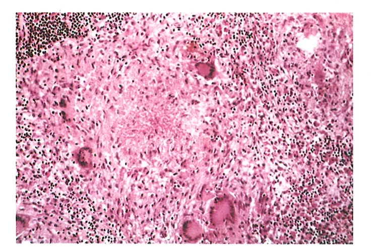
Figura 3.23Cap. 3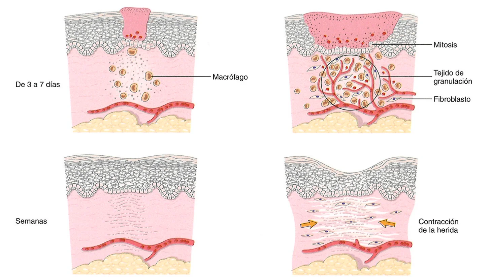
Figura 3.29Cap. 3 Figura 4.12Cap. 4
Figura 4.12Cap. 4 Figura 4.19Cap. 4
Figura 4.19Cap. 4 Figura 4.21Cap. 4
Figura 4.21Cap. 4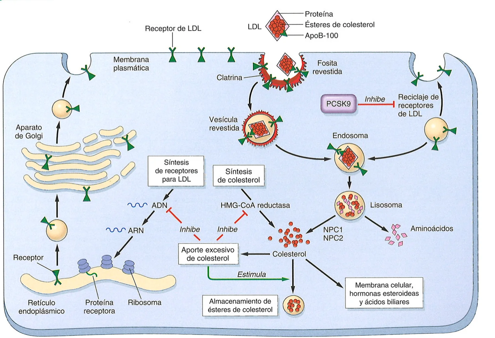
Figura 5.7Cap. 5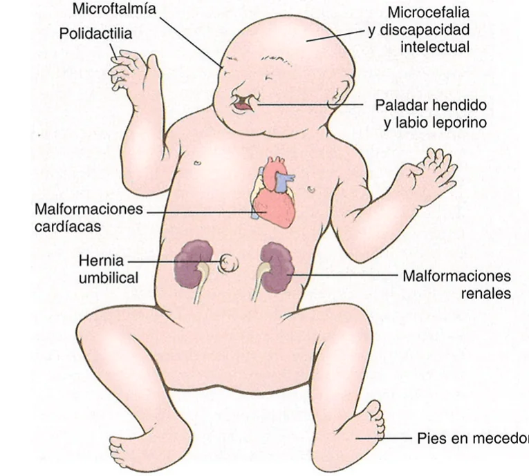
Figura 5.20Cap. 5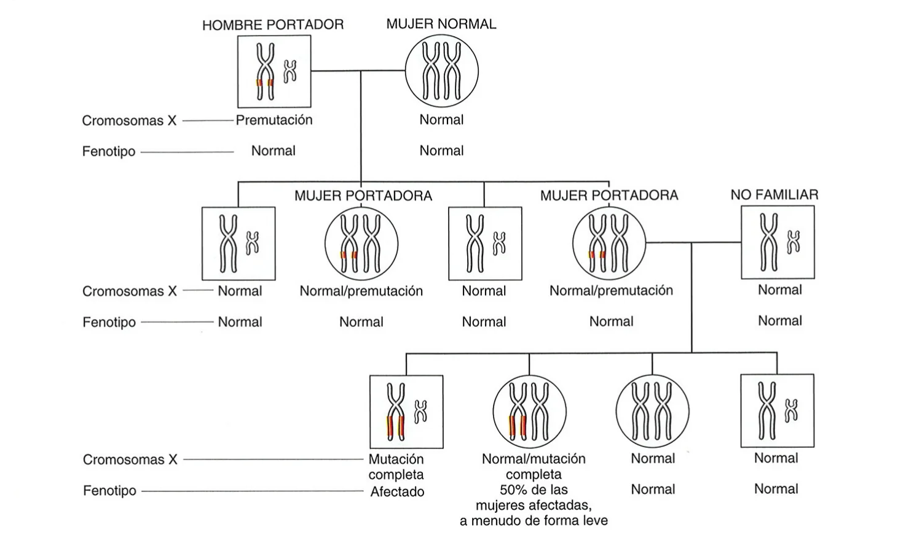
Figura 5.25Cap. 5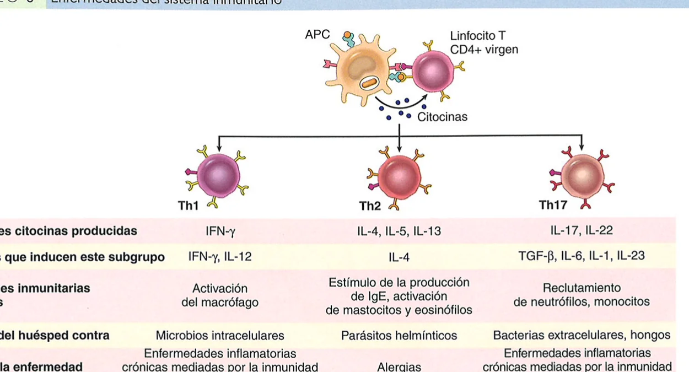
Figura 6.1Cap. 6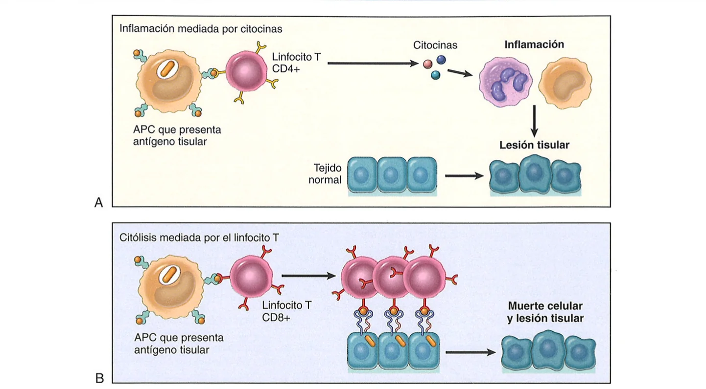
Figura 6.18Cap. 6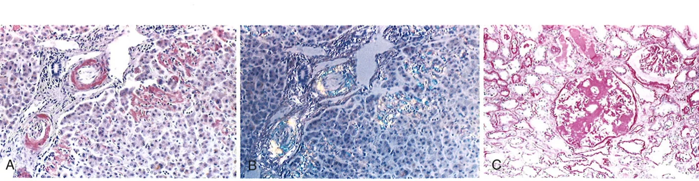
Figura 6.47Cap. 6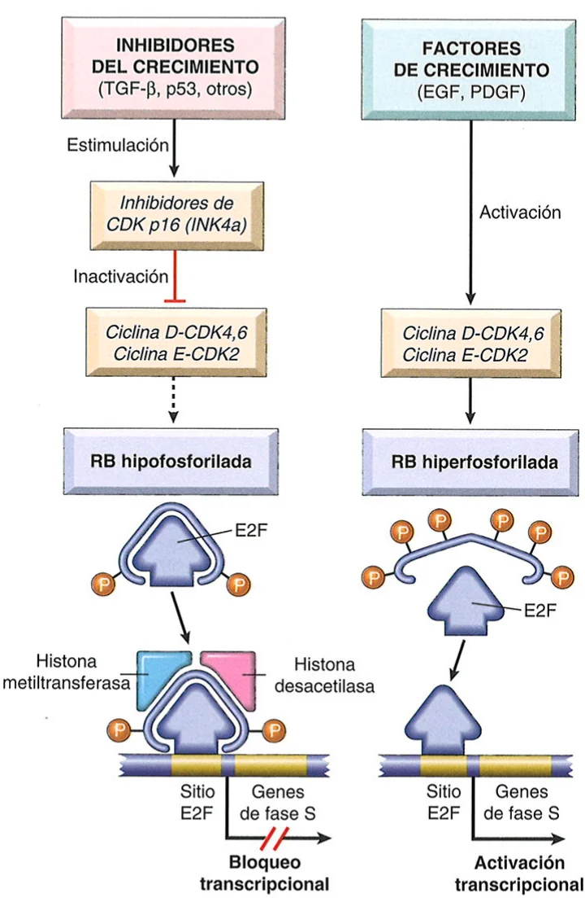
Figura 7.26Cap. 7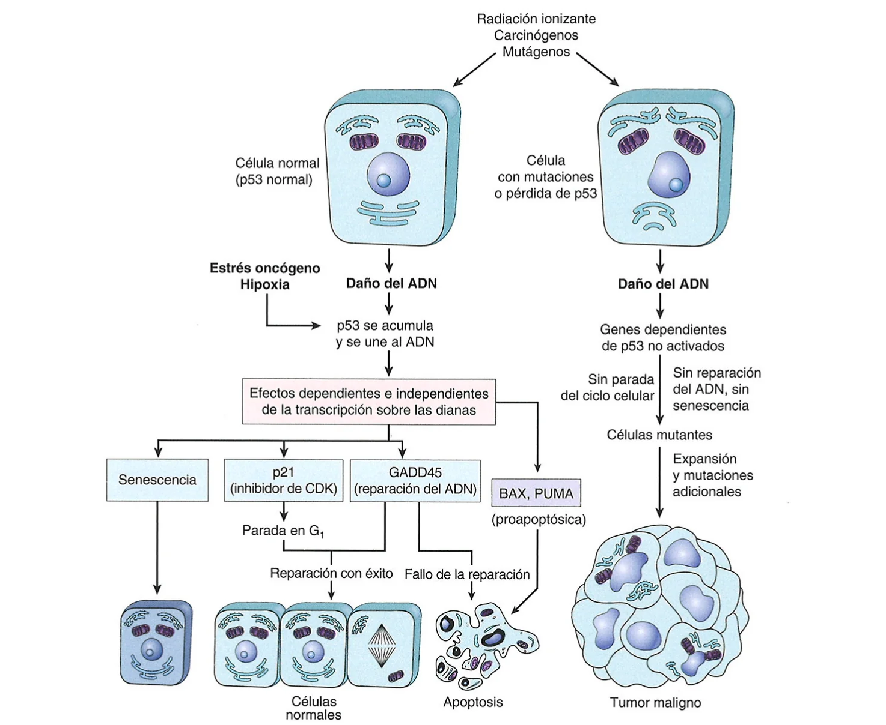
Figura 7.27Cap. 7 Figura 7.15Cap. 7
Figura 7.15Cap. 7 Figura 7.44Cap. 7
Figura 7.44Cap. 7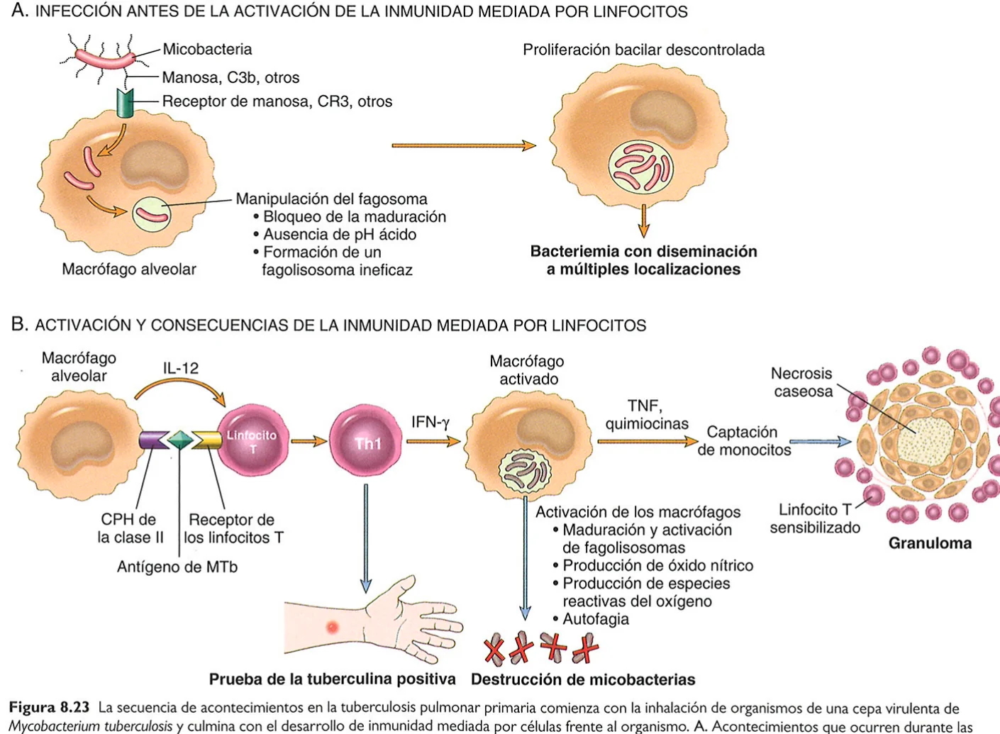
Figura 8.23Cap. 8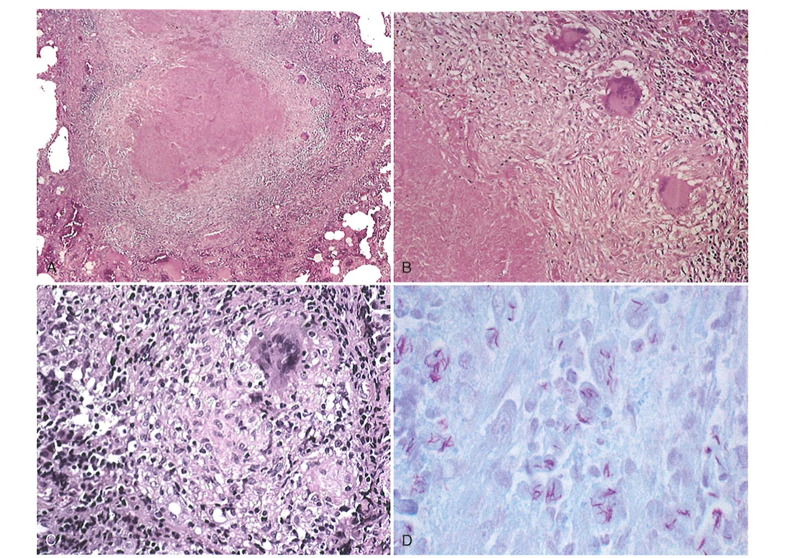
Figura 8.26Cap. 8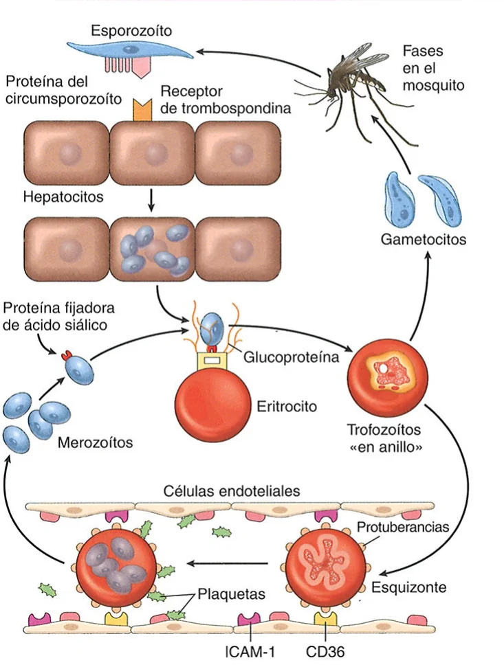
Figura 8.46Cap. 8 Figura 9.3Cap. 9
Figura 9.3Cap. 9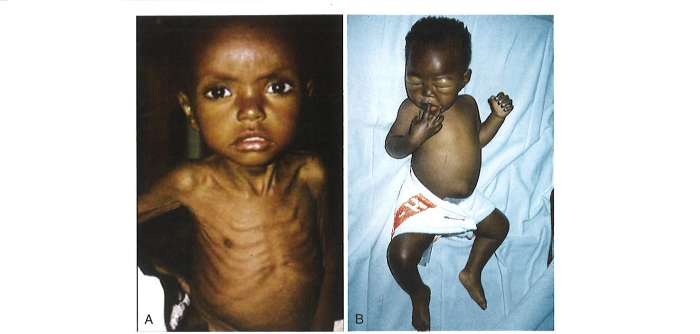
Figura 9.21Cap. 9 Figura 9.26Cap. 9
Figura 9.26Cap. 9 Figura 10.5Cap. 10
Figura 10.5Cap. 10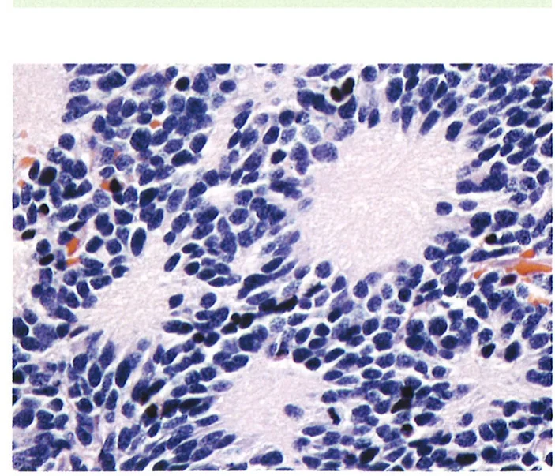
Figura 10.23Cap. 10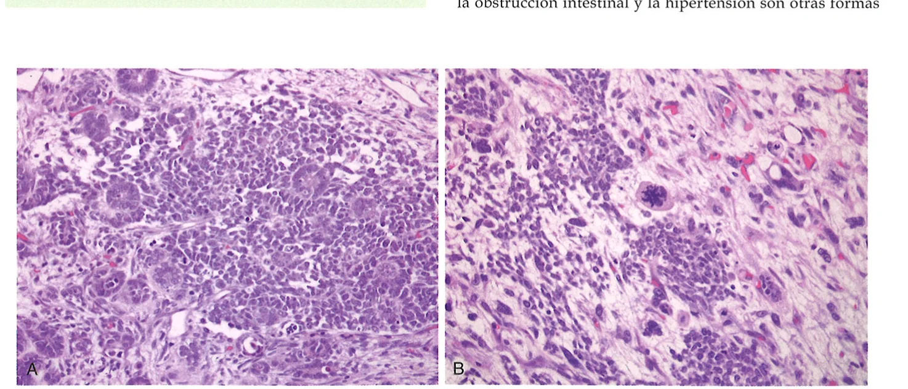
Figura 10.27Cap. 10